Using Account Reconciliations
As I write this chapter, I am reminded of my days working within the General Accounting department. I spent a lot of time preparing and approving reconciliations. Back then, the process was completely manual; I would prepare the Reconciliation in Excel, print my file and all the supporting documentation, obtain physical signatures, and then store the information in a binder for historical purposes. If, within this process, there was a change of any kind (account balance updated, Approver changes, or spelling errors), I had to update the Reconciliation and start the process again.
Painful, to say the least.
As my career progressed, technology advanced and software was developed to automate the account reconciliation process. I have used many of the different point solutions in the market and, although good solutions, they did not fully support the entire process. I still performed many activities external to the solution, and was required to leverage other software packages to compensate for missing processes and reporting.
It was not until I started at OneStream that I found a platform that truly supports the end-to-end process. OneStream takes an organization from the trial balance to daily financial signaling to Account Reconciliations and, finally, to financial statements ensuring financial integrity throughout the process. Without a doubt, OneStream is the leader in the record-to-report space.
In the following chapter, we will walk through the Account Reconciliation Solution from the End User’s perspective. We will be discussing how you navigate the system to prepare a Reconciliation, the sign-off and approval process, and the overall reporting and monitoring capabilities. In addition to walking through the different roles and responsibilities, we will also talk about the best practices in preparing a Reconciliation.
Using Account Reconciliations
Reconciliation Workflow
The process starts by navigating to the Reconciliation Workflow.
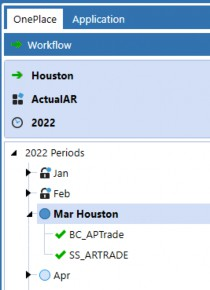
Figure 4.1
Depending on your implementation, you can either have a single Reconciliation Workflow or multiple Workflows that segregate the process by Entities, Business Units, etc. The setup of the Workflow is done by the Administrator and is discussed in detail in Chapter 2. In this section, we will be talking about how you can leverage the Workflow to perform your work.
The Reconciliation Workflow is used to access the Reconciliation Workspace for a specific period. You access the Reconciliations and all related reporting for the period selected within the Reconciliation Workspace. Based on how long the organization has used the Account Reconciliation Solution, you can access historical Reconciliations by navigating to the specific period within the Workflow.
The Workflow can also be leveraged to add supporting data to the Reconciliation process like subledgers or third-party information. The loading of data can be automated to populate the Reconciliation with the ability to drill down to the detail within the Workflow or drill back to the source system if utilizing the Direct Connect process. We refer to this process as Balance Check. You will learn more about Balance Check functionality later in this chapter.
Using Account Reconciliations
Workspace
The Reconciliation Workspace is linked to the Workflow and all Users will leverage the Workspace to perform their responsibilities.
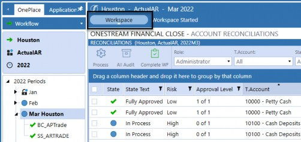
Figure 4.2
The Workspace defaults to the Reconciliations page, although the solution also contains pages for Analysis and Reporting, Administration, Audit, Settings, and Help. You can navigate to the other pages by utilizing the navigation icons in the top-right corner. The icons that are visible to you will depend on your security.
Within this chapter, we will walk through the Reconciliations and Analysis and Reporting pages. The Administration, Audit, and Settings pages were defined in detail in Chapter 2.
Using Account Reconciliations
Reconciliations Page
The Reconciliations page is the default when navigating to the Reconciliation Workspace because it is the page where the Users spend most of their time. This page is used differently by each User, depending on their role and responsibilities. For management, we tend to see Users employ the grid to monitor the Reconciliation process and view specific Reconciliations as needed. Preparers and Approvers will use the Reconciliations page to navigate and perform their work, review, and sign-off. Often, we see Auditors leverage this page to perform their required audit testing.
The Reconciliations page is a treasure trove of information and capabilities. The page can be broken up into three key areas:
Header
Reconciliation Grid
Reconciliation Details
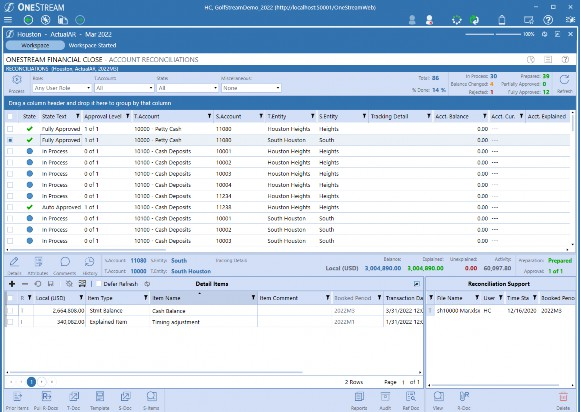
Figure 4.5
Using Account Reconciliations › Reconciliations Page
Header
The header section contains the Process icon, the top grid filters, and the status bar.
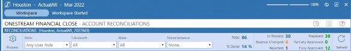
Figure 4.6
Using Account Reconciliations › Reconciliations Page › Header
Process Icon
The Process icon is used to update the Reconciliations, which includes:
Creating the initial Reconciliation for the period.
Updating the Reconciliation balances for new trial balances or supporting data.
Updating certain attribute changes such as Account Groups.
Applying the AutoRec Rules for the given period.
Figure 4.7
Although typically run by the Administrator to update all Reconciliations for the specific Workflow, Preparers and Approvers can also run the process. If run by the Preparer or Approver, only the Reconciliations associated with these Users will be updated.
Using Account Reconciliations › Reconciliations Page › Header
Top Grid Filters
The top grid filters are focused around four key areas that Users tend to view: Role, T.Account, State, and my new favorite Miscellaneous.
Figure 4.8
These filters are applied to the grid and narrow down the Reconciliations presented, based on the selections made. The available filters, and the selections in the drop-downs, are dependent on your security. Also, when leveraging top filters, the statistics will update in the status bar for the subset of Reconciliations. Let us walk through when and why you would use each filter.
Using Account Reconciliations › Reconciliations Page › Header › Top Grid Filters
Role
The Role filter allows you to narrow down the Reconciliations in the grid based on your assigned roles. As a User, I may be a Preparer on some Reconciliations and an Approver on others. Because I hold multiple responsibilities within the Reconciliation process, being able to retrieve Reconciliations based on a specific role or multiple roles allows me to be more efficient and targeted in my work. The different role options are defined in the table below.
| Role Filter | Definition |
|---|---|
| Any User Role | Displays all Reconciliations where the User has an assigned role. This is the default selection for Users unless you are a System Administrator or Auditor. |
| Primary Preparer | Displays all Reconciliations where the User is assigned as Primary Preparer. |
| Primary Approver | Displays all Reconciliations where the User is assigned as a Primary Approver 1, 2, 3 or 4. |
| Primary Preparer/Approver | Displays all Reconciliations where the User is either assigned as Primary Preparer or Primary Approver 1, 2, 3 or 4. |
| AG Preparer | Displays all Reconciliations where the User is assigned as Preparer within the respective Access Group. |
| AG Approver | Displays all Reconciliations where the User is assigned Approver 1, 2, 3 or 4 within the respective Access Group. |
| Role Filter | Definition |
|---|---|
| AG Preparer/Approver | Displays all Reconciliations where the User is assigned Preparer or Approver 1, 2, 3 or 4 within the respective Access Groups. |
| Any Preparer/Approver | Displays all Reconciliations where the User is assigned as Primary Preparer, Primary Approver 1, 2, 3 or 4, Preparer within the Access Group, or Approver 1, 2, 3 or 4 within the Access Group. |
| Viewer | Displays all Reconciliations where the User is assigned the Viewer role within the Access Group. |
| Commenter | Displays all Reconciliations where the User is assigned the Commenter role within the Access Group. |
| Administrator | Displays all Reconciliations. This selection is only available for System Administrators and is the default when navigating to the Reconciliations page. |
| Auditor | Displays all Reconciliations that are in the Fully Approved state. If a User has Auditor security, the filter will default to this role and no additional options will be available. |
Figure 4.9
Some things to note about the Auditor role. It is not expected that a User would have an action role (Preparer, Approver, Commenter, etc.) and the Auditor role. If you have multiple roles in the Reconciliation process – including Auditor – the Auditor role will prevail and prevent you from accessing Reconciliations that are not in the Fully Approved state. On the contrary, it is not expected that an Administrator would also be an Auditor. Therefore, if you are assigned as an Administrator and Auditor, the Administrator role will prevail and you will have access to all Reconciliations. Below is the Auditor view for reference.
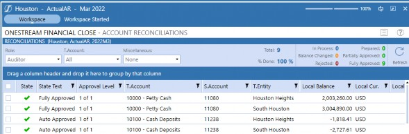
Figure 4.10
Using Account Reconciliations › Reconciliations Page › Header › Top Grid Filters
T.Account
T.Account stands for Target Account. Target Accounts represent the OneStream Accounts that ERP Source Accounts are mapped to upon data import. The mapping process aligns the Reconciliations to the financial statements. The ability to filter by T.Account allows you to see all the Reconciliations that roll into a particular financial statement line and manage the process accordingly. The T.Account filter will be limited, based on your security. You will only have access to the T.Accounts that contain your respective Reconciliations.
Using Account Reconciliations › Reconciliations Page › Header › Top Grid Filters
State
The State filter will narrow the grid based on the Reconciliation state. This filter has multi-select capabilities allowing you to view multiple states in a single search. For example, before I work on In Process Reconciliations, I may want to focus on my Rejected Reconciliations first – to quickly clear my Approver’s comments and then focus on my Balance Changed Reconciliations that may only need minor updates. This allows me to really target my work.
The different states are defined below.
| State | Definition |
|---|---|
| All | Retrieves all Reconciliations regardless of the state. |
| In Process | Reconciliation has been created, but the Preparer has not yet marked it Prepared. |
| Rejected | Reconciliation was Prepared but subsequently Rejected by an Approver |
| Prepared | Reconciliation has been Prepared but not yet Approved at any of the approval levels. |
| Auto Prepared | Reconciliation that has been Prepared through the AutoRec process, requiring a manual approval, and not yet Approved. |
| Partially Approved | Reconciliation that has been Prepared and Approved by some of the Approvers but not yet Approved through all required approval levels. |
| Fully Approved | Reconciliation that is Prepared and Approved through all required approval levels. |
| Auto Approved | Reconciliation that is Prepared and fully Approved via the AutoRec process. |
| Balance Changed | Reconciliation has been created from a trial balance load; and a new, updated balance has been loaded that is different from the original balance. Regardless of the state of the Reconciliation, it will be updated to Balance Changed and moved back to the Preparer’s Workflow to be reviewed/updated. |
Figure 4.11
Using Account Reconciliations › Reconciliations Page › Header › Top Grid Filters
Miscellaneous
The final filter is the Miscellaneous filter which focuses on areas of risk. The Miscellaneous filter supports multi-select capabilities, allowing Users to combine multiple risk areas in a single filter. Below, we define the different Miscellaneous filters available.
| Filter | Definition |
|---|---|
| Failed AutoRec | Identifies Reconciliations that have AutoRec Rules assigned but – for the period – the Reconciliation did not meet the criteria. This filter identifies any additional work required for the given period because the Reconciliation did not meet the expected Auto Reconciliation Rule. |
| Frequency Changed | Identifies Reconciliations that were created for the period based on the frequency set, but the frequency was subsequently updated and the Reconciliation is no longer required. When this occurs, the Reconciliation that was created for the period will move off the grid. By selecting this filter, Users will be able to retrieve those |
| Filter | Definition |
|---|---|
| Reconciliations. Example: Reconciliation Houston-1000 Cash was set to a frequency of 1-12 (Monthly). In February, the balances loaded and the Reconciliation was created for the period. Subsequently, the Administrator changed the frequency to 3,6,9,12 (Quarterly), which deems the Reconciliation not required for the February period. The Reconciliation will be removed from the active grid but can be retrieved through this filter. | |
| High Risk | Filters Reconciliations that have been assigned high risk in the category attribute field. Typically, high risk indicates a Reconciliation that is due sooner in the process and requires more oversight. |
| Improper Sign | Filters for Reconciliations where the balance is going in the opposite direction than expected. Example: Accounts Receivable is expected to have a positive balance. If, upon trial balance load, the balance is negative, this would be an improper sign and an indication that something may be wrong within the General Ledger, identifying potential risk in the balance. |
| Past Due | Identifies all Reconciliations that are currently In Process and past due or fully through the process, but the full Workflow was completed after the due date. |
Figure 4.12
Using Account Reconciliations › Reconciliations Page › Header
Status Bar
Reconciliation statistics are calculated by the system and are presented in the top-right portion of the grid view in the status bar.
Figure 4.13
Statistics are critical to monitoring the Reconciliation process. Understanding where the Reconciliations are in the Workflow assists management in monitoring the close process as well as the overall financial statement risk. Accounts expected to be reconciled by a specific due date that reside in an unreconciled state introduce risk and exposure to the financial statements.
Statistics are calculated based on the total number of Reconciliations being displayed in the grid view and will update if the top filters are being applied. In the next section, we will define the different statistics and how they are calculated by the system.
| Statistic | Definition |
|---|---|
| Total | Total number of Reconciliations displayed in the grid regardless of state. This value represents the Reconciliations that need to be Fully Approved for the period. |
| % Done | Percentage is based on the summation of the Fully Approved count divided by the total count defined above. |
| In Process | Number of Reconciliations to be processed by the Preparer which are not yet in the Prepared state. This number is exclusive of the Reconciliations in |
| Statistic | Definition |
|---|---|
| the Balance Changed and Rejected state. All Reconciliations are in the In Process state upon creation and will remain in this state unless one of the following actions (below) occur. | |
| Balance Changed | Number of Reconciliations that were created from a trial balance load for which a new updated balance has been loaded different from the original balance, creating a change. Regardless of the state, the Reconciliation will be updated to Balance Changed and moved back to the Preparer’s Workflow to be reviewed/updated. |
| Rejected | Number of Reconciliations Rejected by an Approver. Rejection will also move the Reconciliation back into the Preparer’s Workflow to be updated. |
| Prepared | Number of Reconciliations Prepared but not yet Approved by any of the required approval levels. This includes both manual and Auto Reconciliations. |
| Partially Approved | Number of Reconciliations Prepared and Approved but not yet through all the required approval levels. |
| Fully Approved | Number of Reconciliations that are Prepared and Approved through all required approval levels, including Auto Approved Reconciliations. |
Figure 4.14
Statistics are updated as events occur, such as when you prepare a Reconciliation the state is updated to Prepared. Although the state is updated dynamically by the system, you will need to select the Refresh icon in the header to update the status bar and the Reconciliation grid.
Figure 4.15
Using Account Reconciliations › Reconciliations Page
Reconciliation Grid
The Reconciliation grid is a powerful tool that is used for multiple purposes. First and foremost, the Reconciliation grid is a listing of all Reconciliations available to you for a specific period. Because the grid contains many of the Reconciliation attributes, you can leverage the grid for reporting purposes. The Reconciliation grid is also used to open and view a specific Reconciliation, or for mass action Reconciliations, if this feature is turned on within Global Options.
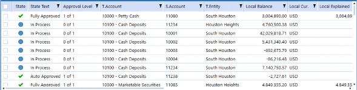
Figure 4.16
Using Account Reconciliations › Reconciliations Page › Reconciliation Grid
Reconciliation Grid Columns
There are many columns displayed within the grid that provide detailed information about a Reconciliation. Each column is defined below.
| Column | Definition |
|---|---|
| Multi-select is part of the grid view and used for the mass action Workflow and audit package creation. It is important to note that you do not need to select the check box to access a Reconciliation. | |
| State / State Text | State image correlates with the State text. The circle is an indication that the Reconciliation is only partially through the process, whereas the check mark is an indication that it is fully signed off. |
| Approval Level | Number of approvals completed and required for the specific Reconciliation. Example: 1 of 3, which indicates that 1 Approver has completed their sign-off of the 3 Approvals required. |
| T.Account | T.Account is the OneStream Target Account that the Source Account (S.Account) is mapped to, and typically reflects the financial statement line. It is the link between the two key processes Account Reconciliations and Consolidations, and normalizes the Accounts when there are multiple ERPs. |
| S.Account | S.Account is the specific ERP Account (Source Account) from the trial balance load and is the level at which the Reconciliation is performed. |
| T.Entity | T.Entity is the OneStream Target Entity that the Source Entity is mapped to for reporting/Consolidation purposes. It is the link between the two key processes, Account Reconciliations and Consolidations. |
| S.Entity | S.Entity is the Entity from the ERP associated (Source Entity) with the trial balance. |
| Tracking Detail | Tracking detail allows the Reconciliation to be performed at a lower level. If you want to reconcile below Entity and Account, the tracking detail allows you to break the balance down using additional dimensionality. We typically see an additional tracking detail for Intercompany, where you may want to reconcile at the Entity-Account-Trading Partner level. However, other breakdowns may include Customer, Vendor, Department, or Accounting Standard (Statutory, GAAP, IFRS). Within this field, the system will display both the Target and Source Dimension breakdown. |
| Acct. Balance* | Acct. Balance is used for single-currency Reconciliations when the Account within the General Ledger is denominated in a currency other than Local. This is common when the organization has foreign bank accounts or investments where the transactions flowing through the |
| Column | Definition |
|---|---|
| Account are in a different currency. The Acct. Balance can be loaded or calculated by the system. | |
| Acct. Cur.* | Represents the currency code of the Account Balance as defined in the Reconciliation Inventory. |
| Acct. Explained* | Summation of the detail items translated in Account currency. |
Acct. Unexplained* | Calculated difference between the Acct. Balance and the Acct. Explained. |
| Acct. Activity* | Difference between current period Acct. Balance and the prior period Acct. Balance, based on the Reconciliation frequency. If the frequency is Monthly, it will look to the prior month to calculate activity. If the frequency is Quarterly, month 1 (1,4,7,10 based on a calendar year), and we are in period 4, the system will look to period 1 to calculate activity. |
| Local Balance | Local Balance represents the amount loaded from the trial balance and is a required field. This balance is used for both the Reconciliation process and the Consolidation process. |
| Local Cur. | Local Cur. is defaulted to the Local currency code for the T.Entity as defined in Entity Dimension. |
| Local Explained | Summation of the detail items added to explain the ending balance. If using multi-currency, it is the summation of the detail items translated in Local currency. |
| Local Unexplained | Calculated difference between the Local Balance and the Local Explained. |
| Local Activity | Difference between current period Local Balance and the prior period Local Balance, based on the Reconciliation frequency. If the frequency is Monthly, it will look to the prior month to calculate activity. If the frequency is Quarterly, month 1 (1,4,7,10 based on a calendar year), and we are in period 4, the system will look to the period 1 to calculate activity. |
| Rpt. Balance* | Rpt. Balance reflects the Local Balance translated to the Reporting currency set in Global Options. This balance can be loaded or calculated by the system. |
| Rpt. Cur.* | Represents the Reporting currency code as defined in the Global Options. |
| Rpt. Explained* | Summation of the detail items translated to Reporting currency. |
| Rpt. Unexplained* | Calculated difference between the Rpt. Balance and the Rpt. Explained. |
| Rpt. Activity* | Difference between current period Rpt. Balance and the prior period Rpt. Balance, based on the Reconciliation frequency. If the frequency is Monthly, it will look to the prior month to calculate activity. If the frequency is Quarterly, Month 1 (1,4,7,10 based on a calendar year), and we are in period 4, the system will look to the period 1 to calculate activity. |
| Account Group | Displays the Account Group name. Account Groups allow Users to reconcile a set of Accounts in a single Reconciliation. Examples of Account Groups include: Fixed Assets, Equity, Intercompany Accounts, etc. |
| Preparer | Primary Preparer assigned to the Reconciliation. User responsible for the preparation of the Reconciliation. |
| Approver 1 | Primary Approver 1 assigned to the Reconciliation. User responsible for the first level of approval. |
| Column | Definition |
|---|---|
| Approver 2 | Primary Approver 2 assigned to the Reconciliation. User responsible for the second level of approval. |
| Approver 3 | Primary Approver 3 assigned to the Reconciliation. User responsible for the third level of approval. |
| Approver 4 | Primary Approver 4 assigned to the Reconciliation. User responsible for the fourth level of approval. |
| Access Group | Displays the Access Group assigned to the Reconciliation. Access Groups provide the ability to have backup Preparers and Approvers, as well as assign Viewers, Commenters, and Local Admins. |
| Type | Account Type as defined in the Account Dimension: Asset, Liability, Revenue or Expense. |
| Risk | Attribute assigned to the Reconciliation indicating the risk ranking: High, Medium, or Low. |
| Preparer Due Date | Calculates the due date based on the month-end day set for the period, and the Preparer workday due attribute set on the Reconciliation. Although the attribute displays as the number of workdays (e.g., +1, +2, etc.), the system will convert this to an actual date for ease of use. |
| Approver Due Date | Calculates the due date based on the month-end day set for the period and the Approver workday due attribute set on the Reconciliation. Although the attribute displays as the number of workdays (e.g., +1, +2, etc.), the system will convert this to an actual date for ease of use. |
| Due-in | Calculation of the due date less the current date. If the value is positive, it will appear in this column. If the Calculation is negative, a zero will appear as the Reconciliation is past due. |
| Past Due | Calculation of the due date less the current date. If the value is negative, it will appear in this column. If the Calculation is positive, a zero will appear as the Reconciliation is on time. |
| Proper Sign | Accounts typically have an expected sign of positive or negative, such as assets versus liabilities, respectively. If an Account is a contra Account, we would expect it to be contrary to the typical sign. To identify potential risk, an attribute can be set on the Reconciliation to identify the expected sign. If the loaded balance has the expected sign, the Proper Sign field will populate OK. If the balance is contrary to the expected sign, the field will display Warning: Balance Not Proper Sign. |
| Update User | Field captures the User that last updated the state of the Reconciliation. |
| Update Time UTC | Field captures the date and time stamp of the last time the Reconciliation state was updated. |
| Process User | Field captures the User that initiated the process that last updated the Reconciliation. |
| Process Time UTC | Field captures the date and time stamp of the last time the Reconciliation was processed by the system. |
| * Only visible if multi-currency is enabled within Global Options, and the field will only populate with information in the grid for the specific Reconciliations where multi-currency is enabled. | |
Figure 4.17
Using Account Reconciliations › Reconciliations Page › Reconciliation Grid
Reconciliation Grid Configuration
As mentioned, the Reconciliation grid is often used for reporting. All the columns above will appear in the grid by default, but you can configure the grid by removing or reordering columns as desired. You can also filter the data in the grid using the column filters or pivot the columns for additional analysis. The grid can also be exported from the system in multiple formats. When you think about it, the reporting options using the grid are endless.
Using Account Reconciliations › Reconciliations Page › Reconciliation Grid › Reconciliation Grid Configuration
Column Filter
Let’s start by reviewing the column filter capabilities. Different from the top filters, you can filter any column where the column filter icon appears.
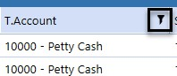
Figure 4.18
Upon selecting the column filter icon, you can select a specific item, multiple items, or you can build out search criteria.
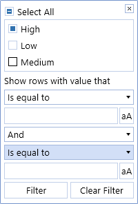
Figure 4.19
The column filter icon will appear orange if a filter is set.
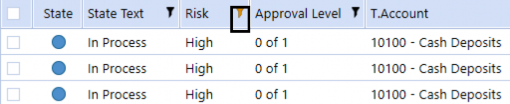
Figure 4.20
| Note: If you do not see Reconciliations that you expect within the grid, it is likely you have a column filter set limiting your view. To remove the filter, select the column filter icon and select the Clear Filter button at the bottom right. |
Using Account Reconciliations › Reconciliations Page › Reconciliation Grid › Reconciliation Grid Configuration
Column Settings
As different attributes have different orders of magnitude for different organizations, being able to reorder and/or remove columns is valuable. A column can be reordered by simply dragging and dropping the column to the desired location. Another option for reordering is through the right-click menu by selecting the Column Settings.
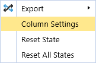
Figure 4.21
From the Column Settings dialog, you can reorder or remove columns as desired.
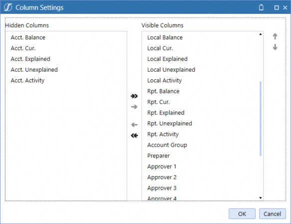
Figure 4.22
Using Account Reconciliations › Reconciliations Page › Reconciliation Grid › Reconciliation Grid Configuration
Column Pivot
Another configuration option is the ability to pivot the Reconciliation grid. You can pivot on one or multiple columns by dragging the column header into the blue bar at the top of the grid.
Reconciliations will pivot, based on the order the column name appears from left to right.
In Figure 4.23, below, we are pivoting on Risk and then State Text. This allows us to quickly see the high-risk Accounts that are in an In Process state, so we can target our work. To remove a column from the pivot, simply select the column name in the blue bar and drag it back into the grid.
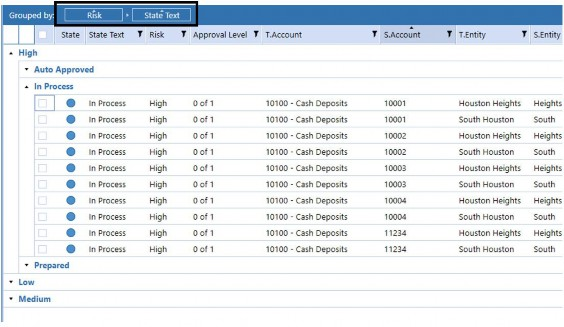
Figure 4.23
Using Account Reconciliations › Reconciliations Page › Reconciliation Grid › Reconciliation Grid Configuration
Saved State
All the grid configurations discussed above are specific to the User making the change. These changes will persist as the User logs in and out of the system because it leverages the saved state capability within OneStream. Saved state preserves your changes to your User ID and allows you to customize your interaction without impacting others. Also, if you would like to reset the page to the default columns, you can right-click and select Reset State.
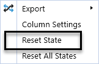
Figure 4.24
However, when selecting Reset State, it not only resets the column filters and the pivot criteria selected, but it also reorders the columns and reinserts any columns previously removed. Therefore, be careful when using Reset State functionality as it could undo all the configuration you have done. From my perspective, I have found that it is easier to manually reset the column filters or the pivot so that I can maintain my column configuration.
Using Account Reconciliations › Reconciliations Page › Reconciliation Grid
Accessing a Reconciliation
Accessing a Reconciliation is done from the Reconciliation grid. You can open or view a Reconciliation by clicking anywhere within the Reconciliation line. Upon selection, the detailed Reconciliation view will appear in the bottom grid. You can navigate from one Reconciliation to the next by simply selecting the respective line.
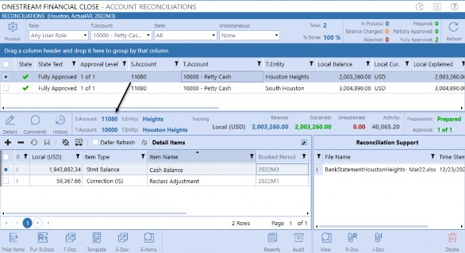
Figure 4.25
You will notice that when you select a Reconciliation line within the grid, the check box to the far left will automatically be selected. Although you can select a Reconciliation using the check box, it is not necessary and not recommended. The check box is required for mass action functionality, but is not needed for navigational purposes. Selecting a Reconciliation by clicking on the line is more efficient.
Using Account Reconciliations › Reconciliations Page › Reconciliation Grid
Mass Actions
Efficiencies are key when trying to optimize the Reconciliation process. Mass action functionality allows you to efficiently perform Workflow functions. Rather than having to action Reconciliations one by one, Preparers and/or Approvers can action multiple Reconciliations with the overall controls still applied – such as thresholds, completion rules, segregation of duties, role security, etc. Also, you can add certification comments (if enabled) that will be applied across the selected Reconciliations.
To utilize mass action, this functionality must be enabled by the Administrator. Depending on which roles are enabled (Preparer, Approver, or Both), the mass action icons may include Recall, Prepare, Reject, Unapprove, and Approve, respectively.
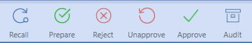
Figure 4.26
To mass action a set of Reconciliations, you will select the check box to the left of the specific Reconciliation. Mass actions will only engage if you have more than one Reconciliation selected.
All selected Reconciliations will appear in the bottom grid, and the mass action icons will appear. Based on the icon selected, the system will update the Reconciliations that meet the requirements. If a Reconciliation is selected that cannot be actioned as requested, you will receive a message indicating what has (or has not) been completed and why.
Let’s walk through an example, below. I have selected four In Process Reconciliations to mass action.
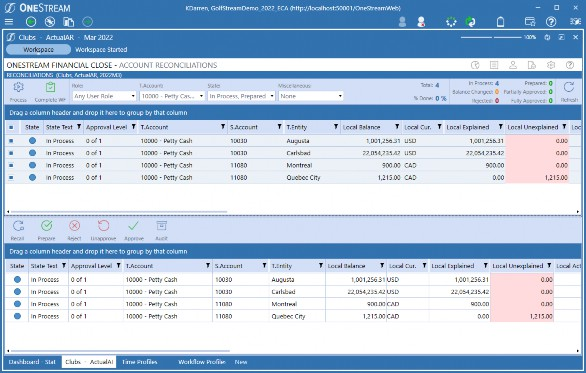
Figure 4.27
When I select the Prepare icon to certify the Reconciliations, I receive a comment box allowing me to add Certification Commentary to all four Reconciliations as this global option is enabled in my solution.
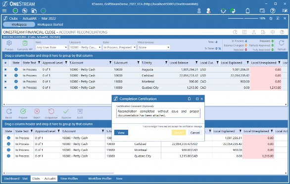
Figure 4.28
Once I input my comments, I can select the Certify button. The system will run through the applicable controls and only action those Reconciliations that meet the criteria.
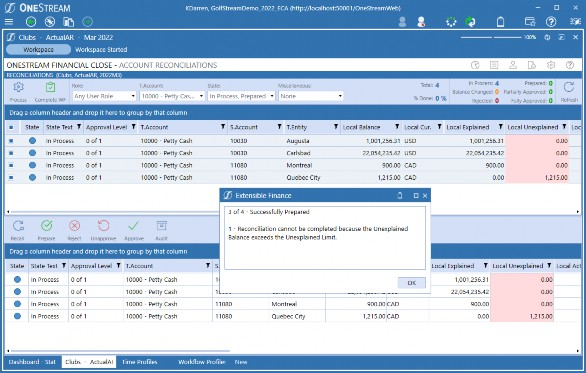
Figure 4.29
As you can see, the system only prepared three of the four Reconciliations. Although I thought that I had prepared the selected Reconciliations, only three of the Reconciliations have an Unexplained balance within the required threshold. The system is preventing the final Reconciliation from moving to the Prepared state because it does not meet the rule.
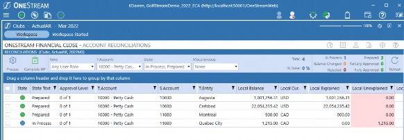
Figure 4.30
As mentioned at the beginning of this section, mass action for the Workflow functions is a setting that is turned on within the Global Options. If not enabled, the multi-select box to the left of the Reconciliation is still available for audit package creation. Audit packages can be created en masse by the Administrators and this icon will only be available for this role. For more information regarding audit, see the audit package section later in this chapter.
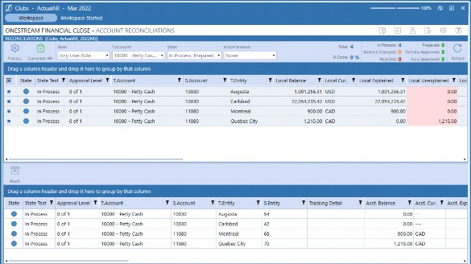
Figure 4.31
Using Account Reconciliations › Reconciliations Page
Detailed Reconciliation View
The detailed Reconciliation view is where the Reconciliation is performed. When a Reconciliation is selected in the top grid, the detailed Reconciliation view will appear at the bottom of the screen. Preparers use the detailed Reconciliation view to add reconciling items, supporting documentation, and comments to explain the ending balance. Approvers leverage this view to perform their review process and add comments if necessary. In the following section, we will discuss the detailed Reconciliation view and the related functionality. This section is intended to create a foundation for the User. Additional preparation options, along with viewing the Reconciliation from the Preparer and Approver perspective, will be covered in later sections.
The detailed Reconciliation view can be seen in Figure 4.32. The Reconciliation presented is for a Bank Account; however, the User Interface in the solution is the same, regardless of the type of Account you are reconciling. This is intentional.
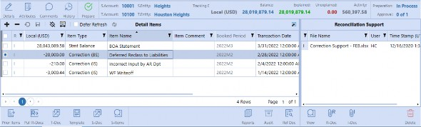
Figure 4.32
Whether I am viewing a Bank Account, Prepaid, Subledger, Accrual, or any other type of Account, the User Interface will be the same for ease of use and review. Like a lead sheet concept, the system captures the key information needed for control purposes and to provide robust reporting.
The next question we are normally asked is whether OneStream supports Reconciliation templates. The answer is: of course! Instead of building varying formats within the system that will not satisfy every organization, our templates are built in Excel. Excel allows full flexibility to create a format that works for you and your Users. You are not limited to the number of templates created and the templates can be linked to specific Reconciliations.
Leveraging Excel for templates creates the best of both worlds: a consistent User Interface within the application with flexible use of a template format in Excel for analysis. Why do organizations like the Excel templates? Templates help guide the User through the analysis portion of the process. Users can perform their work within the template and then upload the template into the system for Automatic Reconciliation creation. We will talk more about using templates later in this chapter. Also, see Section 2 for more information on creating and linking templates to Reconciliations.
Let’s get started by walking through the three main sections of the detailed Reconciliation view:
Detailed Reconciliation header
Detail items grid
Reconciliation support
Using Account Reconciliations › Reconciliations Page › Detailed Reconciliation View
Detailed Reconciliation Header
The detailed Reconciliation header contains multiple key components associated with the specific Reconciliation being viewed. Within the header, you can view the preparation state, approval levels, Reconciliation balances, Reconciliation level, tracking detail, history, Child Accounts (if a grouped Reconciliation), and attributes. You can also perform actions such as adding comments or updating the Workflow if allowed. Below, we will detail the different components of the Reconciliation header.
Figure 4.33
Using Account Reconciliations › Reconciliations Page › Detailed Reconciliation View › Detailed Reconciliation Header
Preparation State
The preparation state is shown in the top-right corner of the detailed Reconciliation header and indicates the state of the Reconciliation as it moves through the preparation process. The possible states include: In Process, Balance Changed, Rejected, or Prepared.
Figure 4.34
Using Account Reconciliations › Reconciliations Page › Detailed Reconciliation View › Detailed Reconciliation Header
Approval Levels
Approval levels indicate the number of Approver sign-offs that are required for the Reconciliation to be in the Fully Approved state. The solution supports up to four levels of approval. Typically, we see organizations use one to two levels; however, four levels are available should the need occur. In the example presented in Figure 4.34, this particular Reconciliation requires three levels of approval, and it has been signed off by the first Approver. At this point, the Reconciliation is in the Partially Approved state. To be Fully Approved, the remaining two Approvers will need to sign-off.
Using Account Reconciliations › Reconciliations Page › Detailed Reconciliation View › Detailed Reconciliation Header
Reconciliation Balances
The Reconciliation balances are located in the top-right corner of the detailed Reconciliation header and display different amount fields, which include the Balance, Explained, Unexplained, and Activity amounts. These amounts are populated and/or calculated by the system and cannot be edited. Each amount presents key information about the Reconciliation.
Figure 4.35
The Balance amount field populates from the trial balance (the Stage data) loaded within the Actual Scenario. As trial balances are loaded throughout the period, the Balance amount will be updated when the Reconciliation process function is run. The Reconciliation process can either be run manually from within the Account Reconciliation solution (as noted in the Process icon section above), linked to the trial balance load process in the Actual Scenario, or scheduled via Task Scheduler.
If the Balance amount subsequently changes after the Reconciliation has been created, the Reconciliation will move to the Balance Changed state. Also, note that if the Reconciliation is already in the Workflow process (Prepared, Approved, AutoRec, etc.), the system will revert the Reconciliation back to the Preparer to re-reconcile, and email alerts can be sent if desired.
The Balance amount may also represent an Aggregation of Account balances if the Reconciliation is set up as a Group Reconciliation. Grouping is common when you want to analyze Accounts together like fixed assets, intangibles, equity, etc. Rather than prepare each Account as a separate Reconciliation, you can group them into a single Reconciliation. In this case, the Balance amount will be the summation of the underlying Child Accounts.
The remaining balances presented – Explained, Unexplained, and Activity – are all calculated values that are populated by the system. The Explained balance is the summation of the detail items. As detail items are saved to the Reconciliation, the Explained balance will be updated automatically.
The Unexplained amount is calculated as the difference between the Balance amount and the Explained amount. It is the Preparer’s job to explain the balance to within a threshold set by the organization. Some organizations do not require a threshold and allow for differences to remain unexplained; others require the balance to be explained down to zero or within a set tolerance. It is typically defined in the company’s policy whether a threshold is required or not. If there is a threshold, you will not be able to mark the Reconciliation as Prepared, from a certification perspective, until the Unexplained balance is within the threshold set.
Activity is provided for informational purposes. It is calculated as the change in the current balance minus the prior balance based on the frequency set. For example, if the Reconciliation has a Monthly frequency (1-12) and we are in the March 2022 period (2022M3), the activity will be calculated as the March balance minus the February balance. Assuming we are still in March, if the frequency was Quarterly (3,6,9,12), the activity would be calculated as the March balance minus the December 2021 balance. If there is no balance loaded for the prior period, based on the frequency, the prior balance is assumed to be zero.
All balances are presented in Local currency unless the Reconciliation is set for multi-currency. If multi-currency is enabled on the Reconciliation, you will see three sets of balances – one for each currency type: Account, Local, and Reporting. As you add items, Explained and Unexplained will update for all three currency-type balances.
Figure 4.36
Also, notice that the currency-type Account in Figure 4.36 is displayed in an enhanced font. This is an indication that the Account balance is the designated Reconciliation balance, and although all three balances are presented, the threshold is being applied to the Account balance for certification purposes.
Using Account Reconciliations › Reconciliations Page › Detailed Reconciliation View › Detailed Reconciliation Header
Reconciliation Level
Reconciliations are typically performed at the Entity and Account levels. However, you do have the ability to reconcile at a lower level, such as Trading Partner, Profit Center, Department, Customer, etc. The more levels associated with an Account, the more granular the balance is defined and the more Reconciliations that are created. The Reconciliation Level always displays the S. Account, S.Entity, T.Account, and T.Entity. If the Reconciliation has additional levels, they are displayed in the Tracking Detail section.
Figure 4.37
Using Account Reconciliations › Reconciliations Page › Detailed Reconciliation View › Detailed Reconciliation Header
Tracking Detail
As described above, if the Reconciliation is being performed at a lower level, the Tracking Detail will display the additional information. In the example below, we are reconciling at the Entity-Account-IC-UD1 level. This means that, in addition to the Entity and Account, the balance is broken down further by the Intercompany Partner (Montreal) and Cost Center (Event Management). Therefore, what used to be a single Reconciliation for Heights-11257 is potentially multiple Reconciliations, one for each unique Trading Partner and Cost Center combination.
Figure 4.38
Using Account Reconciliations › Reconciliations Page › Detailed Reconciliation View › Detailed Reconciliation Header
History
History tracks the audit trail for the Reconciliation. You can navigate to the History page by selecting the History icon.
Figure 4.39
As the Reconciliation moves through the Workflow process, the system will keep track of the actions taken (prepare, approve, reject, recall, etc.), the time stamp, User ID, state, approval level, Reason Code, and any comments added during the certification or rejection process. If the Reconciliation is auto reconciled, the History page will also track the AutoRec Rule used to certify the Reconciliation.
In addition, this page will display all the supporting documents, attached in the historical periods, allowing you to view the documents at your discretion.
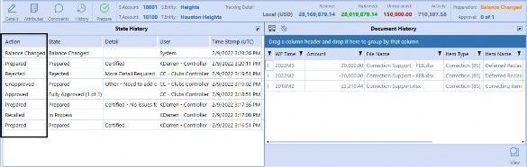
Figure 4.40
Using Account Reconciliations › Reconciliations Page › Detailed Reconciliation View › Detailed Reconciliation Header
Attributes
The Attributes page displays the specific attributes associated with the Reconciliation, like Access Group, approval level, risk level, proper sign, etc., and can be accessed from the Attributes icon.
Figure 4.41
This page provides you with visibility to key information about the Reconciliation that is not displayed in the detailed Reconciliation view. Attributes can be edited from this page if you have the proper security, and the Reconciliation is not yet in the Prepared state.
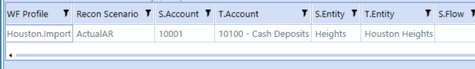
Figure 4.42
Using Account Reconciliations › Reconciliations Page › Detailed Reconciliation View › Detailed Reconciliation Header
Child Recs
The Child Recs icon only appears if the Reconciliation is a Group Reconciliation.
Figure 4.43
As discussed previously, grouping is the process of combining multiple Accounts together to create a single Reconciliation for you to prepare. The Reconciliation – from a User perspective – will look and act the same regardless of whether it is grouped or not. However, if the Reconciliation is grouped, the underlying detail Accounts can be viewed on the Child Recs page.
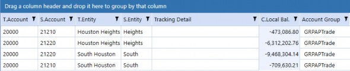
Figure 4.44
Grouping can be done across different Entities, Accounts, or currency codes. If grouping across multiple currency codes, the group Reconciliation will have to be set as a Multi-Currency Group and a common currency code will need to be selected for the Account and Local balances. In addition, the Child Accounts will be translated to the common currency codes so that the balances can be aggregated properly. Visibility to the original balances and translated balances are also presented on the Child Recs page.
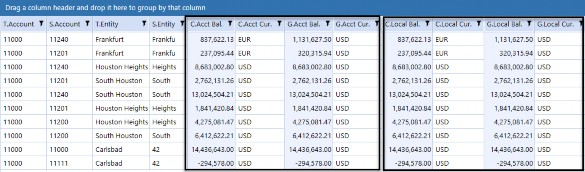
Figure 4.45
Using Account Reconciliations › Reconciliations Page › Detailed Reconciliation View › Detailed Reconciliation Header
Comments
Comments can be added at the Reconciliation level and allow you to provide additional insight or context around the Reconciliation. Preparers and Approvers can add commentary prior to actioning the Workflow. In addition, Users that have the Commenter role can add comments at any time regardless of the state of the Reconciliation. Once added, comments cannot be edited or deleted.
To add a comment, select the Comments icon.
Figure 4.46
The Comments icon navigates you to the Commentary page. You can type the comment in the bottom box and select the Add icon. The comment is added to the Reconciliation with your User ID and date and time stamp for audit purposes.
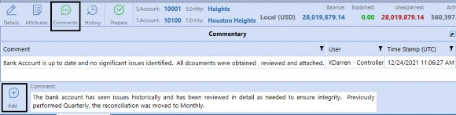
Figure 4.47
Once a comment has been added to the Reconciliation, the Comments icon(s) will move from blue to green as a visual indicator that a comment has been attached. If turned on, email alerts can also be sent when comments are added. Also, note there is no limitation to the number of comments added to a particular Reconciliation.
Using Account Reconciliations › Reconciliations Page › Detailed Reconciliation View › Detailed Reconciliation Header
Workflow Actions
Workflow icons appear in the header and allow you to move the Reconciliation through the sign-off process. There are multiple different Workflow icons available, and what appears to the User depends on their security and the state of the Reconciliation. For example, if I am a Preparer on the Reconciliation and it is in the Prepared state, I will only have the Recall icon available when I view that particular Reconciliation. The different Workflow icons are defined below, alongside the User Role that can perform the action.
| Icon | Definition | Preparer | Approver | Admin |
|---|---|---|---|---|
| Preparer sign-off. Available when the Reconciliation is in the In Process, Balance Changed, or Rejected state. | X | X | X | |
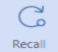 | Recalls the Reconciliation and moves it back to the In Process state. Available when the Reconciliation is in the Prepared state (not yet Approved). | X | X | X |
| Rejects the Reconciliation back to the Preparer with a Rejection Reason Code and possible commentary if added. | X | X | ||
| Approver sign-off. Available when the Reconciliation is in the Prepared or Partially Approved state. | X | X | ||
| Sends the Reconciliation back to the Prepared state with a Reason Code and possible commentary if added. | X | X |
Figure 4.48
Using Account Reconciliations › Reconciliations Page › Detailed Reconciliation View › Detailed Reconciliation Header
Details Icon
The final icon that appears in the far left of the header is the Details icon.
Figure 4.49
If you navigate to another page like History, Attributes, or Comments, the Details icon will return you to the Detail Items page, which is the default when selecting a Reconciliation.
Using Account Reconciliations › Reconciliations Page › Detailed Reconciliation View
Detail Items Grid
Detail items are also known as reconciling items or transactions that explain the ending balance. The detail items grid is the heart of the Reconciliation and is where the Preparer will spend most of their time adding items and explanations. It is expected the Preparer will add as many items as required to explain the ending balance. As items are saved to the detail items grid, the Explained and Unexplained balances update accordingly. As a reminder, you will not be able to sign-off on the Reconciliation if the Unexplained balance is not within the threshold set on the Reconciliation.
In the following section, we will walk through:
Detail item fields
Creating, editing, or deleting detail items (I Items)
Prior item functionality
Multi-currency items
Multi-currency overrides
We will be starting with the basic steps to create items. However, there are multiple different ways you can automate this process through templates, Transaction Matching, and Balance Check functionality. Each of these automation options will be covered later in this section.
Using Account Reconciliations › Reconciliations Page › Detailed Reconciliation View › Detail Items Grid
Detail Item Fields
Let’s start by walking through the fields within the detail items grid. The table below provides a definition of each field and how it is used. The more information provided when creating a detail item, the easier it will be for the Approver to review and the Auditor to audit, as well as offering better overall reporting and analysis.
| Field | Definition |
|---|---|
| Multi-select box is used to select specific items in the grid. Users leverage this for mass deleting. | |
| O* | Override status field. The Override status is for multi-currency Reconciliations and will automatically populate only if the User types over a translated value in any one of the translated detailed amount fields (Account, Local, or Reporting). The override capability is a Reconciliation attribute and must be enabled by the Administrator on the specific Reconciliation. If an override occurs, the field will populate with an A (Account), L (Local), and R (Reporting) depending on the fields overridden. |
| R | Reconciliation Item Type classifications. This field is a system-generated field and defines how the item was created. The field is very useful for the Approver and Auditor. All of the possible Reconciliation Item Types are defined below, and each will be discussed in detail throughout this section. I = Manually added or prior items carried forward. T = Items imported from the period-specific template (T-Doc). S = Items imported to the current and/or future period from the schedule template (S-Doc). B = Balance item imported from an independent source through data integration. X = Items created from Transaction Matching. |
| Amount* | Value of the item in transactional currency. |
| Currency* | Transactional currency code populated from a drop-down list. The drop-down will default to the currency code on the Account but can be updated by the User to any currency code available in the system. |
| Account* | Calculated value translating the Amount field to Account currency leveraging the currency rates within the system. The calculated amount can be overridden by the User if the Allow Override feature is turned on. |
| Local | Value of the item in Local currency. For single-currency Reconciliations, this value is inputby the User and assumed to be in the Local currency of the Reconciliation. For multi-currency Reconciliations, this field is the calculated value, translating the Amount field to the Local currency, leveraging the currency rates within the system. The calculated amount can be overridden by the User if the Allow Override feature is turned on. |
| Field | Definition |
|---|---|
| Reporting* | Calculated value translating the Amount field to Reporting currency, leveraging the currency rates within the system. The calculated amount can be overridden by the User if the Allow Override feature is turned on. |
| Item Type | Item Types categorize the detail items added and are used for reporting and analysis purposes. Item Types are assigned to the detail item by the User, upon creation, and are selected from a standard drop-down list. The list is set up by the organization and is used across the solution by all Preparers for consistency. |
| Item Name | Description of the item. Item name is a required field and the User will not be able to save the detail item if this field is not populated. |
| Item Comment | Comment field on the detail item to provide additional information. |
| Booked Period | Automatically populated and represents the Workflow period when the item was created/added. Booked period cannot be altered. |
| Transaction Date | The specific date of the item, such as check date, invoice date, etc. Transaction date drives the aging Calculation and can be any date prior to, or equal to, the booked period end date. Users can type in the date or use the calendar object to make their selection. If not updated, this field will default to the period end date of the booked period. |
| Aging | Automatically calculated as the difference between the current Workflow period being viewed minus the transaction date. The field is populated upon save and is read-only. |
| Ref 1 | Optional field used to store additional information about the item. |
| Ref 2 | Optional field used to store additional information about the item. |
| User | Name of the User that originally created and saved the line item. The field is automatically populated by the system and is read-only. |
| Time Stamp | Time stamp based on the time the line item was created and saved. The field is automatically populated by the system and is read-only. |
| * Only visible if multi-currency is enabled within Global Options, and the field will only be visible in the detail items grid for multi-currency Reconciliations. | |
Figure 4.50
Using Account Reconciliations › Reconciliations Page › Detailed Reconciliation View › Detail Items Grid
Manual Items (I Items)
Manual items, also referred to as I-items, are the most used Reconciliation Item Type because they can be generated by the User or created upon pull-forward from prior periods. In the next section, we will discuss the actions that can be performed when preparing the Reconciliation manually. You will only be able to perform actions within the detail items grid if the Reconciliation is in the In Process state.
Next, in Figure 4.51, we will define the action icons:
| Icon | Definition |
|---|---|
| Insert row icon creates new lines in the detail items grid. | |
| Delete row icon removes lines in the detail items grid. | |
| Cancel all changes icon will undo any unsaved changes such as new lines added, updates, or deletions. Once saved, changes cannot be undone. | |
| Save icon saves changes in the detail items grid. | |
| Deselect All icon unchecks any line that is selected via the multi-select check box in the grid. | |
| Column settings icon allows you to rearrange or remove columns. However, it does not maintain your selection and will reset when you navigate away from the Reconciliation. This feature within the detail items grid does not leverage saved state capability and is therefore not recommended. | |
Defer Refresh will allow you to add or delete items without updating the Explained and Unexplained Calculations until you select the refresh. Although available, this functionality is not recommended. |
Figure 4.51
You can manually create, edit, and remove items as needed. To create new items, you will select the insert row icon. This action will create new lines in the grid that will appear shaded yellow, indicating that the line has not yet been saved.
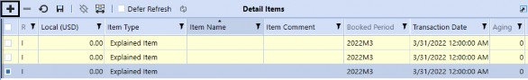
Figure 4.52
When creating the items, you will populate the fields desired and, most importantly, select the save icon once complete. As you add, update, or delete information within the grid, the save icon will become active, indicating that a save action is required. If you fail to select save and navigate away from the detail item grid, your changes will be lost. If the save icon appears shaded, as shown below, it is an indication that the items have been properly saved.
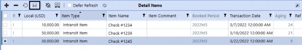
Figure 4.53
Also, note that the Item Name is a required field, and you will not be able to save the detail item line if this field is not populated. If you attempt to save the item with a blank item name field, the system will provide the following error message.
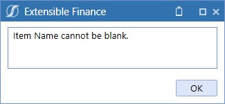
Figure 4.54
All current booked period items can be edited if the Reconciliation is not in the Prepared state. Edits will also need to be saved prior to navigating away from the grid, or updates will be lost.
If you need to delete a detail item, you can select the specific line or use the multi-select box to the left of the items. Once all the items to be deleted are selected, you will need to select the minus icon and then the save icon. This will remove the lines from the grid.
| Note: Deleting items only affects the current period and will not impact historical Reconciliations. |
Whether you are adding, editing, or deleting, if during the process you make a mistake or change your mind, you can select the cancel changes icon to reset the changes. The cancel changes functionality only works on unsaved changes. Once you save the changes, there is no ability to cancel the change.
Using Account Reconciliations › Reconciliations Page › Detailed Reconciliation View › Detail Items Grid
Prior Items
Prior items is the ability to bring historical detail items forward into the current period Reconciliation to help explain the ending balance. Prior items allow you to be more efficient in preparing the Reconciliation. There are two options when leveraging prior items functionality. You can either Pull Items or Copy Items into the current period. Each option is unique in how it functions.
The Pull Items function is used when a transaction from a prior period still belongs to the current ending balance. This function allows you to carry forward the item into the current period, maintaining audit integrity. Pulled items are read-only except for the item comment field. The detail item will carry forward with all existing I-Docs and the system will maintain the original booked period. You will be able to add additional I-Docs if desired, but you cannot remove any previous period documents for control and audit purposes.
Contrary to the Pull Items function, you can copy items, which is the ability to take the historical item and replicate it as a new item in the current period. The new item will have an updated booked period and all fields will be editable. Also, historical I-Docs are not brought forward with the copy item function because it is treated as a new item and requires new documentation. The copy feature is normally used to be more efficient. If you have an item that is similar each month, but which varies in amount, copy items allows the system to create the item with all the information and you will only have to update the amount field and add the proper support.
To initiate either Pull or Copy Items, select the Prior Items icon located in the bottom-left corner of the grid.
Figure 4.55
Once selected, you will receive a dialog box displaying all the items that are available to be pulled or copied. The system will look to the prior Reconciliation based on the frequency; monthly will look to the prior month, quarterly to the prior quarter, etc. Select the check box next to the desired items and then select either Copy Items or Pull Items in the bottom-right corner.
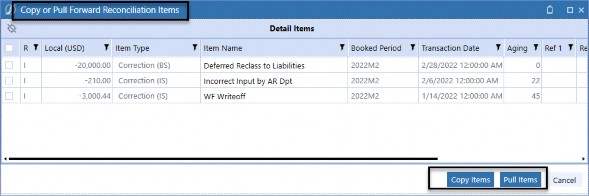
Figure 4.56
| Note: Only certain Reconciliation Item Types and Detail Item Types are available to be pulled forward. |
For Reconciliation Item Types, only manual items (I-Items) and template items (T-Items) will appear in the dialog box. Schedule items (S-Items), Transaction Matching items (X-Items), and Balance Check items (B-Items) are period-specific and cannot be pulled forward. Also, for audit and control purposes, all template items (T-Items) – pulled or copied – will be converted to manual items (I-Items) because they are no longer associated with a template.
Similarly, only certain Detail Item Types can be pulled forward. If the Item Type was created within the control list (by the Administrator) as a statement type, it will not be available in the Prior Item dialog box as it is assumed to be period-specific. All other Item Type definitions, which include Explained, Correction (BS), and Correction (IS), will be available assuming they meet the Reconciliation type criteria above.
Also, during this process, if you copy or pull items in error, you have the ability to delete the items in the current period. Deletion will remove the item from the current period but not impact historical Reconciliations.
Using Account Reconciliations › Reconciliations Page › Detailed Reconciliation View › Detail Items Grid
Multi-Currency Functionality
Most organizations typically perform single-currency Reconciliations in the Entity’s Local currency. However, there are times when an Entity may have Accounts that are denominated in a currency other than the Local currency or the transactions flowing through the Account are in multiple different currencies. In these situations, we would want to turn on multi-currency functionality.
For single-currency Reconciliations, you will see a single Local amount field in the detail items grid with the Local currency code displayed in the header for presentation purposes.
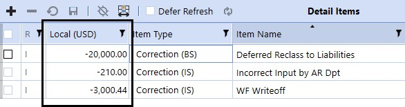
Figure 4.57
When a Reconciliation is set for multi-currency, the detail items grid will contain four amount fields as follows: Amount representing the value in transaction or document currency (input by the User) and three additional amount fields which represent the translated values for Account, Local, and Reporting based on the currency codes set for the Reconciliation. The currency code associated with each Amount field is visible in the column header, as seen in the screenshot below, indicating that the Account value is in GBP, Local is in EUR, and Reporting is in USD.
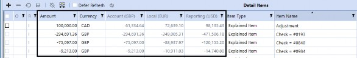
Figure 4.58
When creating an item in a multi-currency Reconciliation, you will input the Amount value and select the currency code of the transaction from the currency drop-down list. The currency drop-down will default to the currency code of the Account balance but can be updated accordingly. The drop-down list is populated by the system and will reflect the currency codes set up in the application. The solution supports all currency codes, so if an expected currency code does not appear, you should contact the organization’s OneStream Administrator.
Once you save the newly-created item, the system will automatically translate the Amount value to the Account, Local, and Reporting values. The Translation Calculation is leveraging the FX rates within the application for the specific rate type and period. The FX Reporting Currency and the FX Rate type (typically the ClosingRate) are defined by the Administrator on the Global Options page. The translated amounts will be read-only to the User if the multi-currency override is not turned on for the Reconciliation.
Using Account Reconciliations › Reconciliations Page › Detailed Reconciliation View › Detail Items Grid
Multi-Currency Override Values and Support
Multi-currency override is a feature that allows you to override the translated values calculated by the system. Overrides are typically used in situations where the transaction needs to be held at a historical or spot rate, and using the system Translation will not provide an accurate value.
This feature is turned on at the Reconciliation level and is typically only set on specific Accounts. Overrides can be performed on any one of the three translated values: Account, Local, or Reporting. If any of the value fields are overridden, the system will keep track of which fields have been updated and note it in the Override column. The letters in the Override column correlate to the first letter of the value columns, A for Account, L for Local, and R for Reporting. In addition, if any of the three values are overridden on any of the lines, a message will appear in the top-right corner of the Reconciliation, indicating that overrides have occurred.
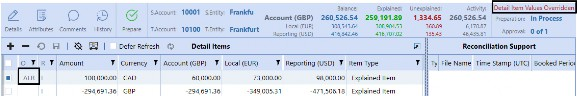
Figure 4.59
If you override a value in error, and would like the system to calculate the Translation, simply type a zero in the specific value field and select save. You cannot leave the field blank – it must contain a zero which will trigger the system Translation. If you want a zero in any of the translated values because you are adjusting just Reporting or Local values only etc., you will need to add a zero-amount item as shown below.
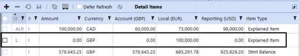
Figure 4.60
In addition to value overrides, you can set the Reconciliation to require that documentation be attached if overrides are performed. Because override values are calculated by the User, it is good practice to require support to explain the translated values. The override support requirement will check for either an I-doc for each item overridden or an overall R-doc at the Reconciliation level. If a document is not attached, you will receive the following error message, and you will not be able to mark the Reconciliation as Prepared.
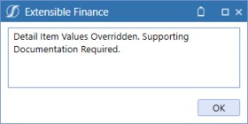
Figure 4.61
Using Account Reconciliations › Reconciliations Page › Detailed Reconciliation View
Reconciliation Support
Support is critical to the Reconciliation process to validate the item created. Reconciliation support can come in many different forms, such as statements, reports, invoices, Calculations, etc. Within this area, we will discuss the ability to upload, view, and delete documentation. The ability to action a document will depend on your security and the state of the Reconciliation.
The supporting documentation action icons are as follows:
| Icon | Definition |
|---|---|
| View the document selected in the Reconciliation support screen. | |
| Delete the document selected in Reconciliation support screen. | |
| Allows User to upload a document to a detail item. This icon is only visible when a detail item is selected. | |
| Allows User to upload an overall Reconciliation support document. | |
| Allows User to pull overall Reconciliation support documents forward from the prior Reconciliation period. |
Figure 4.62
Using Account Reconciliations › Reconciliations Page › Detailed Reconciliation View › Reconciliation Support
Uploading Documents
Documents can only be uploaded if the Reconciliation is in the In Process state. You can upload as many documents as needed to a detail item or at the Reconciliation level. Documents added at the item level are referred to as I-Docs, and overall Reconciliation documents are referred to as R-Docs.
To upload support, you will select the I-Doc and R-Doc icons, which are located within the Reconciliation support screen at the bottom of the detail items grid. The R-Doc icon is always visible because it supports the overall Reconciliation, whereas the I-Doc icon will only appear when a specific saved detail item is selected.
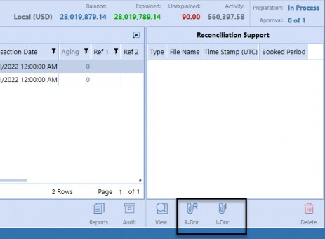
Figure 4.63
When you select the applicable upload icon, a file explorer dialog will appear. You can navigate to your file and select Open.
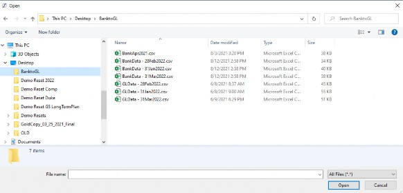
| Note: You can have multiple documents on a detail item or Reconciliation; however, you can only add one document at a time. |
Figure 4.64 This will add the file to the Reconciliation support screen.
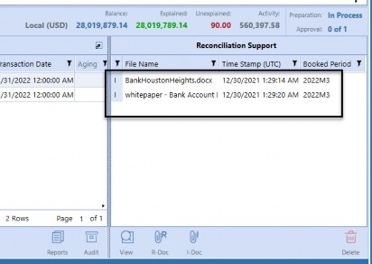
Figure 4.65
From a support perspective, documents are typically in the following formats PDF, HTML, MHT, RTF, DOCX, XLS, XLSX, CSV, Text, Image, and Zip files (to name a few). Outside of XML, the system does not limit the file format but assumes the User viewing the document will have the software necessary to open the specific file. Each file cannot exceed 2 GB.
Using Account Reconciliations › Reconciliations Page › Detailed Reconciliation View › Reconciliation Support
Viewing Documents
If you have access to the Reconciliation, you will have the ability to view any of the attached supporting documentation. To view the document, highlight the file and select the View icon. The system will open the file in the software required or pop up a dialog asking you what application you would like to open the file with (such as Notepad, Wordpad, etc.). When viewing the document, it is read-only and changes made will not be automatically saved back to the system.
Using Account Reconciliations › Reconciliations Page › Detailed Reconciliation View › Reconciliation Support
Editing Documents
All documents uploaded to the solution are read-only. You cannot change the document from within the system. To update a document, you will need to open the file using the View icon and save it externally to the solution. Once all the updates are complete, you will need to re-upload the file to the Reconciliation. If the file has the same name, the system will replace the original file and provide the User with a message indicating that the file will be replaced.
Using Account Reconciliations › Reconciliations Page › Detailed Reconciliation View › Reconciliation Support
Deleting Documents
Current period I-Docs, R-Docs, or pull forward R-Docs can be deleted in the current period if you have Preparer rights and the Reconciliation is in the In Process state. You cannot delete historical I-Docs that are attached to a detail item created from the pull forward process for control and audit purposes. To remove a historical I-Doc, you will need to delete the pull forward item from the current Reconciliation (and any other period the historical item was pulled into) and navigate back to the original period and delete the document within that period’s Reconciliation and re-pull the items. If, however, the documentation is accurate for the historical periods but not valid in the current period, you should copy the detail item – versus pull – as noted in the prior items section above. The copy function creates the item in the current period but does not bring forward the documentation.
Using Account Reconciliations › Reconciliations Page › Detailed Reconciliation View › Reconciliation Support
Pull Forward R-Docs
Similar to prior item functionality, you can pull forward R-Docs from the prior Reconciliation based on the Reconciliation frequency. Pull R-Docs functionality is more efficient because it eliminates the need for you to reattach the historical documents and ensures document integrity. If R-Docs are pulled forward, you have the ability to delete the documents from the current period if you have the proper security rights and the Reconciliation is not in the Prepared state. Deleting pulled forward R-Docs will only impact the current period and will not delete the document from the prior periods.
Using Account Reconciliations › Reconciliations Page › Detailed Reconciliation View › Reconciliation Support
Document Auditability
When a document is added to a Reconciliation, the system will assign a type, User ID, time stamp, and the booked period. Although tracked, the User ID is only viewable from the History page.
Document types are described below and include the S-Doc and T-Doc, which will be covered later in the automation section.
I – Item document visible when the item is selected.
R – Reconciliation document visible at the Reconciliation level.
T – Template document visible at the Reconciliation level.
S – Schedule document visible at the Reconciliation level.
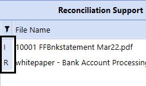
Figure 4.66
Using Account Reconciliations › Reconciliations Page › Detailed Reconciliation View
Additional Reconciliation Features
There are additional features that are available within the detailed Reconciliation view that help support the process, such as Reports, Audit, and Ref Doc. Each of these is a separate icon located at the bottom-center of the detail items grid and can be accessed by any User that has access to the Reconciliation.
Figure 4.67
Using Account Reconciliations › Reconciliations Page › Detailed Reconciliation View › Additional Reconciliation Features
Reference Document
The Reference Document is used to provide more information about a particular Reconciliation. Typically, this document will contain the purpose of the Account, the Reconciliation procedures, and detailed work instructions identifying the steps required to prepare the Reconciliation. It is useful to have a Reference Document because it helps a Preparer who may be new to reconciling the particular Account understand what they need to do. It is also useful for management to understand how the Account is being used by the organization. In addition, it can assist the Auditor because they can use the document to answer questions around how the Account is being analyzed.
The Reference Document can be accessed from the Ref Doc icon, which only appears if a Reference Document has been associated with the specific Reconciliation.
Figure 4.68
Like all documents, the Reference Document is read-only. Also, Reference Documents are attached by the Administrator and are set at the T.Account level and cannot be maintained by the Preparer. If you would prefer the Preparer to maintain this type of documentation, you can use the R-Doc functionality in lieu of the Reference Document. The R-Doc can be carried forward, period over period, or referenced from the History page. R-Docs, as discussed previously, are also read-only, but can be replaced by the Preparer as needed without impacting history.
Using Account Reconciliations › Reconciliations Page › Detailed Reconciliation View › Additional Reconciliation Features
Reports
Reports functionality allows you to view the Reconciliation in a Report format. Reports are valuable because you can provide the Reconciliation to a person external to the process without having to give them access to the Account Reconciliation Solution. The Report contains key information about the Reconciliation, including attributes, balance information, detail items, commentary, and sign-off history. To run the Reconciliation Report, you select the Reports icon.
Figure 4.69
Upon selection, a dialog box will appear requiring you to select the Report Type and Currency Level.
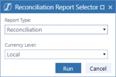
Figure 4.70
The Report Type allows you to select Reconciliation or History. If you select Reconciliation, the system will run the current period Reconciliation Report. If History is selected, the system will create a Report package that contains the Reconciliation for each period the Reconciliation exists in the system.
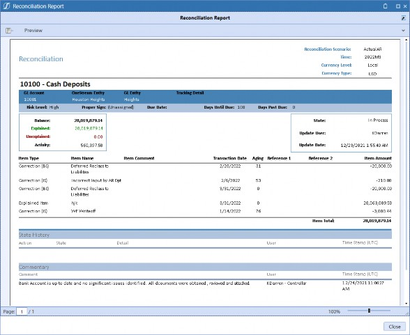
Figure 4.71
The Currency Level selection drop-down is dependent on the type of Reconciliation. If you are viewing a single-currency Reconciliation, the currency type options will be either Local or Translated to Reporting. If you are viewing a multi-currency Reconciliation, you can run the Report in any of the currency values (Account, Local, or Reporting) or All, which will present all three currencies in the Report. The Currency Type selected is visible in the top-right corner of the Report.
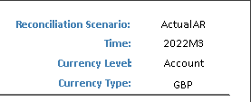
Figure 4.72
Reconciliation Reports can be printed, exported, or sent electronically to another User. The Export and Send formats are presented in the screenshot below.
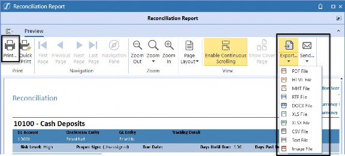
Figure 4.73
Using Account Reconciliations › Reconciliations Page › Detailed Reconciliation View › Additional Reconciliation Features
Audit Package
Audit functionality allows the ability to create an audit package that contains the Reconciliation Report (discussed above, excluding the Reconciliation-level comments) and all the supporting documentation within the Reconciliation support screen for the specific period. Audit functionality provides the ability to extract the full Reconciliation and provide it to Users outside of the system, like the internal or external Auditor. It is best practice to allow the Auditor within the solution to perform their work; however, if your organization prefers not to allow this access, the Audit function allows you to provide the information with minimal effort.
The audit package is created when you select the Audit icon.
Figure 4.74
For single-currency Reconciliations, the system will immediately create the ZIP file and require you to select the Download button.
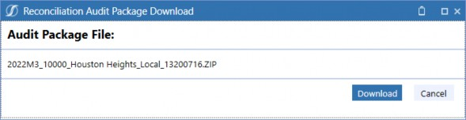
Figure 4.75
For multi-currency Reconciliations, the system will ask which Currency Level you would like to run the audit package in – Account, Local, Reporting, or All – before creating the ZIP file for download.
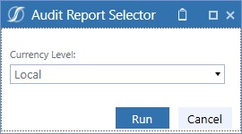
Figure 4.76
All audit packages created are stored in the OneStream File Share. You can locate the audit package by navigating to your personal folder and then to the Recon Audit Packages subfolder. From here, you can download the file, add a description, or delete it if desired.
Audit Package Folder:
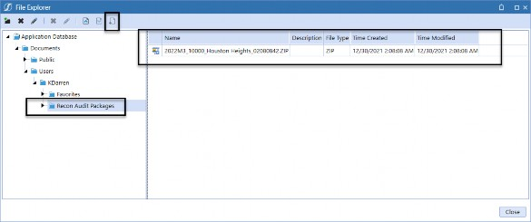
Figure 4.77
| Note: The Reconciliation Report included in the audit package does not contain the overall Reconciliation comments. This was by design so that Preparers and Approvers can communicate with each other without the Auditor seeing the comments within the audit package. |
Using Account Reconciliations › Reconciliations Page
Automating Reconciliations
As mentioned earlier, leveraging the Account Reconciliation Solution provides the ability to automate certain steps within the process. In the previous section, we discussed the manual creation of reconciling items which is one of the many ways you can interact with the system. In the next section, we will discuss other ways you can automate item creation and sign-off.
Automation can be gained using the following functionality:
Period Templates
Schedule Templates
Balance Check
Transaction Matching
We will walk through each of these processes in detail and discuss where they are most used.
Using Account Reconciliations › Reconciliations Page › Automating Reconciliations
Period Templates
As discussed, the User Interface is set up to be the same, regardless of the type of Account you are reconciling; this was done by design. Organizations typically have their own desired templates, layouts, analysis, etc., that they prefer to use for reconciling. Although we could build standard templates in the User Interface, feedback we received from our customers – who have historically used other Reconciliation tools – is that set templates designed in the User Interface are rigid, not intuitive, and would not meet all Users’ needs. Therefore, they preferred utilizing Excel.
To address the ability to have consistency and flexibility, the Excel template capability was created. Because OneStream integrates with Excel, it was natural to leverage Excel for item upload purposes. Templates allow you to analyze and explain in Excel, but then provide you with the ability to upload the template. Upon upload, the system automatically creates the detail items and attaches the template to the Reconciliation for support. You are not limited to the number of items you can upload, and the import process can be more efficient than manually creating each detail item, line by line.
Templates are designed and assigned by the Administrator, and an organization can have as many templates as desired. However, minimizing the number of unique templates is key to creating standardization and consistency. The Administrator will link the template to the specific Reconciliations where applicable.
| Note: Only one template can be linked to a single Reconciliation for a given period. See the Administration section for more information on template creation and maintenance. |
You can access the Reconciliation template by selecting the Template icon at the bottom of the detailed Reconciliation view.
Figure 4.78
By selecting the Template icon, the system will launch Excel and open the specific Reconciliation template for you. Depending on the design, templates will typically show the Account information and current period balance with additional tabs available for you to perform your analysis. The template can contain multiple tabs leveraging formulas, pivot tables, charts, etc., as needed.
In Figures 4.79 and 4.80, there is a sample of the basic template delivered for single-currency Reconciliation, and multi-currency Reconciliation, respectively.
Single-Currency Basic Template:
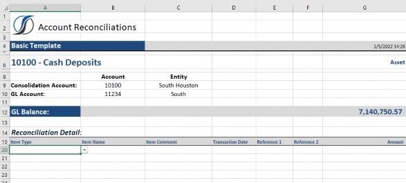
Figure 4.79
Multi-Currency Basic Template:
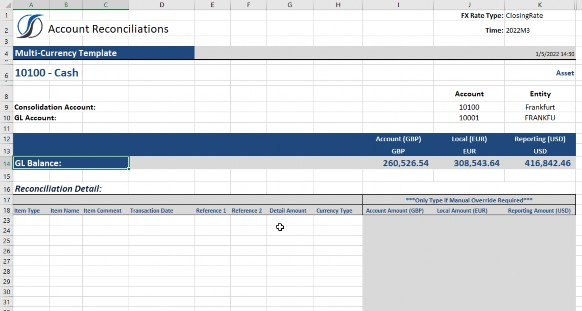
Figure 4.80
Once the template is prepared and ready for upload, you will save the file outside of the application. The file cannot be opened in Excel when you attempt to upload it. The upload process is initiated by selecting the T-Doc icon at the bottom of the detail items grid.
Figure 4.81
Upon selection, a file explorer dialog will appear, and you will navigate to your file and select open.
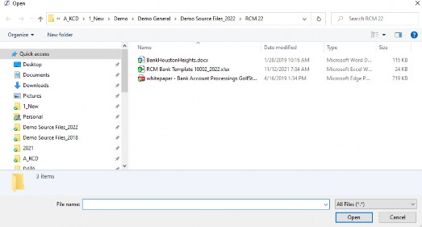
Figure 4.82
The T-Doc functionality will upload the detail items from the Reconciliation-named range within the Excel Workbook and attach the file for support. The items created in the system will be denoted with a Reconciliation Item Type of T, indicating that it was generated from a template upload.
Also, the template will automatically be attached in the Reconciliation support screen, and it will be denoted with a T indicating that it came from the T-Doc load. The T-Doc is presented at the Reconciliation level and will appear regardless of the detail item selected. See the screenshot in Figure 4.83 for an example of the Reconciliation following the template upload.
Figure 4.83 Below are a few items to consider when using templates.
Only one template can be associated with a Reconciliation for a given period. As an example, assume I upload Template A which creates the detail items and attaches the template in the Reconciliation support screen. Subsequently, I upload Template B to the same Reconciliation. At the point I upload Template B, all the detail items created from Template A and the Template A document attached will be removed. The solution will replace the detail items and supporting document with Template B.
Templates may need to be edited or adjusted after being uploaded into the solution due to new information or Approver comments. Although you cannot update the template directly in the system, changes can be made through the template process. If you have an update to make, open the specific template file (from the system or from where it was saved prior), make the change, save the file and close Excel, and reload the T-Doc. As discussed above, the new load will remove all previous T items and the attached document and replace it with the new file information.
Template loads will only replace T Reconciliation Item Types. If the Reconciliation for the period contains other Reconciliation Item Types – such as I, B, X, or S – the T-Doc import process will not impact these lines.
Template items can be brought forward into the next Reconciliation period using the Prior Items icon. When brought forward, the detail items will be updated from a T to an I Reconciliation Item Type.
T-Docs cannot be pulled forward period over period.
Templates can be reused month over month. It is not necessary to download a blank template each period if you prefer to use the prior template. The prior template will allow you to have a starting point and the ability to update accordingly. Prior templates can be accessed by navigating to the prior Reconciliation or through the document grid in the History page.
If, upon upload, not all of your detail items appear in the Reconciliation, it is typically due to the XFT-named range. The import functions are reading the defined named ranges when importing, so if the range is not all-inclusive of your detail items, your upload may be incomplete.
The template import functions (XF references) can also be added to an existing Reconciliation file if desired. You do not need to create templates or a template library. Existing Reconciliation files that are already in use by an organization can be updated and used to populate the solution.
Using Account Reconciliations › Reconciliations Page › Automating Reconciliations
Schedule Templates/Multi-Period Templates
Schedule templates, also known as multi-period templates, allow for multiple period item creation and Auto Reconciliation. This means that you can create a schedule and prepopulate future periods for expected items that are scheduled to occur. If the detail items loaded to the future periods sum to the value of the General Ledger balance in that future period, the system can auto reconcile the Reconciliation, creating efficiency in preparation and completion. Use cases for the schedule templates include depreciation, accretion, amortization, and standard accruals, to name a few.
A standard multi-period template is included, but your organization can update and configure the template to support different schedule formats. The Administrator will link the template to the specific Reconciliations where a schedule is required. As a reminder, only one template can be linked to a Reconciliation for a given period. To access the multi-period template, you will select the Template icon at the bottom of the detail items grid, which will launch the template in Excel for you to prepare.
Figure 4.84
When viewing the multi-period template, the main difference from the period template is a field for the Amortization period. The Amortization period is required because it indicates the period the balance should be loaded into. Because a Reconciliation is validating the ending General Ledger balance, the amount to be loaded for each period should not be the Expense amount (Accretion, Amortization, or Depreciation, etc.) but the period’s ending balance amount after adjusting for the Expense that has been incurred. Schedule templates are available in both single-currency and multi-currency formats.
Single-Currency Multi-Period Template:
Figure 4.85
Multi-Currency Multi-Period Template:
Figure 4.86
Upon downloading the template, you will prepare the schedule, save the file outside of the application, and close the file from Excel. The file cannot be opened in Excel when uploading. To load the schedule template, select the S-Doc icon.
Figure 4.87
The load process for the schedule template is similar to the period template process, in that it will read the detail items and populate the system. However, this template will also read the amortization period and load the items into all periods within the file. Future period Reconciliations must be in the In Process state in order for the upload to be successful. The items created in the system will be denoted with a Reconciliation Item Type of S. All S items will have the same booked period, based on the period the file was uploaded. Also, the template will automatically be attached in the Reconciliation support screen, and it will be denoted with an S, indicating that it came from the S-Doc load. The S-Doc is presented at the Reconciliation level and will appear regardless of the detail item selected. The S-Doc will also be attached to all the future periods where an item was created.
Figure 4.88
Below are a few items to consider when using the schedule template.
Only one multi-period template can be loaded in a specific Reconciliation for a specific period. If you attempt to import a secondary multi-period template within the same period, the system will delete the existing items and create new items based on the secondary template. In addition, the existing template attached for the period will be replaced with the second template.
The S-Doc should be loaded into the oldest Reconciliation period defined in the schedule. Example: if your file has items from 2022M1 through 2022M12, you should load the schedule into the 2022M1 Reconciliation. If you are starting the Reconciliation in period 2022M3, then you should only load values for 2022M3 and forward. It is not recommended that you load into historical periods.
If, in a future period, your schedule should change or need to be updated, you can load an updated file. The file should contain the current period to be updated and any future periods accordingly.
The amortization period field requires a specific format. The field should reflect the period that you want to load into, along with an exclamation point added to the beginning of the syntax as follows: !2022M3, !2022M4, !2022M5, etc.
The S-doc will only be added to current and future periods. The document will not attach to historical periods even if historical items are part of the schedule. Again, if you have historical periods, you should load the S-Doc into the oldest period within the schedule.
S items cannot be loaded into future periods where the Reconciliation is in the Prepared state, the Workflow is marked complete, or where the period is locked.
Auto Reconciliation for S items will only occur for future periods. This is for control purposes. The first period the schedule is loaded into requires manual review and sign-off. This is to ensure that the schedule is accurate. Once validated, it is assumed that future periods are accurate and can be properly auto reconciled.
Using Account Reconciliations › Reconciliations Page › Automating Reconciliations
Balance Check
Balance Check is the ability to confirm the General Ledger balance using an independent source that has been loaded into the system through the Data Management Import process. As part of the Reconciliation, the Balance Check amount will compare to the General Ledger balance and can auto reconcile if the Unexplained balance is within the threshold set automating the Reconciliation preparation and Workflow.
Balance Check can be used for any source (including third-party sources) in which the first step the Preparer takes is to affirm the General Ledger to a Report or set of information. Examples include: Subledgers, Subsystems, Bank Sources, Payroll Processors, Third-Party Service Providers, Investment Statements, etc.
The Balance Check import leverages the application data integration functionality and can be loaded either via a flat file or Direct Connect. The level of detail loaded from the independent source is up to the organization. You can load ending balances, transaction-level detail, or anything in between – like customer or vendor level, etc. The import process is typically done independently of the Preparer.
When a Reconciliation is set up as a Balance Check, the T-Doc and S-Doc functionality will no longer be visible at the bottom of the detail items grid and is replaced with the Pull B-Chk and Go To B-Chk icons.
Figure 4.89
When imported, the Balance Check can automatically pull into the Reconciliation or be pulled in manually by the User. To automatically pull the Balance Check into the Reconciliation, the Reconciliation must be linked to an AutoRec Rule and Process must be run for the period.
However, you can also manually pull in the Balance Check amount by selecting the Pull B-Chk icon.
| Note: The data must be loaded into the system via the import process in order for the Balance Check amount to pull into the Reconciliation. Balance Check items are denoted as a B Reconciliation Item Type. Also, note that the Balance Check can be updated after the initial load. If the Balance Check data changes, and a new pull occurs (either automatically or manually), the existing B items will be removed and the system will create the new Balance Check items accordingly. |
Balance Check functionality can be done for single-currency or multi-currency Reconciliations. If the Balance Check is loaded for a single-currency Reconciliation, the balance loaded will be assumed to be in the Local currency of the Reconciliation. For multi-currency Reconciliations, the Balance Check is expected to be loaded in the transactional currency. The data should contain the amount along with the currency code. Upon load, the system will summarize the transactions creating a balance by currency code. The Reconciliation will display a balance for each currency code and translate the respective balance to the Account, Local, and Reporting amounts. Balance Check also supports overrides which means if the organization would like to also load the translated Account, Local, or Reporting balances from the source, the loaded balance will supersede the Translation and the override column will indicate the balances were overridden.
An example of a Balance Check Reconciliation is shown below.
Figure 4.90
Using Account Reconciliations › Reconciliations Page › Automating Reconciliations
Transaction Matching Items
Transaction Matching is another solution within OneStream Financial Close that is available to assist in the preparation of a Reconciliation. There are many different Accounts that lend themselves to the matching process. The most common use cases are Bank to GL, Credit Cards, Subledgers (AR/AP), Suspense, and Intercompany, to name a few. There really is no limitation. Anywhere you are sifting through high volumes of transactions to identify Unmatched items, Transaction Matching can assist.
How I tend to determine if an Account is a good candidate for matching is if there are significant transactions being analyzed, the criteria being used to match or clear items is consistent period over period (i.e., the Match Rules), and the Reconciliation is normally derived from the uncleared or open items. In these scenarios, you can set up Transaction Matching to automate the creation of the detail items and AutoRec the Reconciliation if the matching items tie out to the General Ledger balance within the threshold set.
Item creation can occur either through the push process – where transactions are pushed from the Transaction Matching Match Set to the Reconciliation, or through the pull process – which pulls transactions manually from within the Reconciliation. Both options are available to you and are used in different situations. Either way – push or pull – the system automates the creation of items, eliminating a lot of manual work. In this section, we will walk through the pull process, which is done from the Reconciliation point of view. The Transaction Matching process, plus push capabilities, will be discussed in detail within the Transaction Matching Chapters 5-8.
To pull transactions into a Reconciliation, the Reconciliation must be associated or linked to Match Sets. Once a Reconciliation has at least one Match Set associated with it, the Reconciliation view will change to include two new icons: Match Item and Match Set.
Figure 4.91
In the following example, we will be working with a Bank to General Ledger Match Set. In this scenario, the Unmatched transactions represent timing items (deposits in transit, outstanding checks, wires, bank fees, NSFs, etc.) that support the General Ledger balance. All Unmatched transactions will need to be pulled into the Reconciliation as detail items.
To pull an item from Transaction Matching, select the Match Item icon.
Figure 4.92
The system will launch the Create Detail Items dialog box, which displays the transactions from the data sets associated with the Match Set. In this example, there are two data sets, DS1, which is the General Ledger transactions, and DS2, which represents the bank transactions. In the screenshot below, we are looking at the Unmatched transactions.
Figure 4.93
The transactions within the Create Detail Items dialog box are specific to the Reconciliation from which the icon was selected. Although the data sets contain transactions that cross many Entities and Accounts, the system is filtering the data sets to only include the transactions associated with this Reconciliation. In addition, the dialog box contains a set of options that can be set by the Preparer prior to creating the detail items. Each option is defined in Figure 4.94.
| Field | Definition |
|---|---|
| Match Set | Main drop-down menu to toggle between Match Sets associated with the Reconciliation. The transactions that appear within each data set grid are dependent on the Match Set selected within the drop-down. |
| Transaction Status | Identifies the types of transactions being displayed, Unmatched or Matched. By default, the drop-down is set to Unmatched. |
| Match Reason Code* | Allows Users to filter the transactions in both data sets based on the Reason Code assigned to the match. |
| Match Period* | Filters the Workflow period of when the match occurred either by the system rules or manually by a User. The selections available are All, Current, or Future. This filter is used for cutoff purposes, to be discussed below. |
| Import Period* | Filters the Workflow period of when the transactions were loaded into Transaction Matching. This is limited to the current period and any historical periods. This filter is used for cutoff purposes, to be discussed below. |
| Transactions | Drop-down contains the selection options for the data set: • Selected (Default) – Indicates that the transactions selected via the multi-select box in the grid will be pulled into the Reconciliation. Selections can be made across multiple pages as needed. • (All) – Regardless of the transactions selected in the grid, all transactions – across all pages – will be pulled into the Reconciliation. • (None) – Regardless of the transactions selected in the grid, no transactions will be pulled into the Reconciliation for that data set. |
| Reverse Sign | Reverse sign is applied to the amount fields mapped (Detail Amount, Account, Local, and Reporting) so that it will display the value in the opposite direction for Reconciliation purposes. If the value is a positive $2,000 and reverse sign is selected, the value will pull into the Reconciliation as a negative -$2,000. |
| Item Name | Mapped from the Match Set, the item name will populate based on the field identified. The field name is denoted within the brackets, e.g., [Check No]. Users can override the field by typing into the box. If the User overrides, the typed information will populate to all the transactions pulled. If Aggregation is set to the date field or Total (where multiple item names can exist), or if the item name field is left blank, the item name will default to Transaction Matching Item because the item name field must be populated when the item is created. Also, note that if the field is overridden, it cannot be reset by the User by typing in the field name with the brackets. To reset it back to the mapped field, the User will need to close the Create Detail Item dialog and relaunch. |
| Aggregation | Aggregation is the ability to sum transactions in a meaningful way. This will minimize the number of transactions presented in the detail items grid on the Reconciliation. Transactions will aggregate for each data set independently. If the Reconciliation is a single-currency Reconciliation, the system will aggregate first based on the currency codes prior to performing the Aggregation defined below. Although aggregating, the detail is not lost. From the Reconciliation, the User can drill back to the |
| Field | Definition |
|---|---|
transaction detail using the Drill Back icon in the Reconciliation Support screen. Aggregation is highly encouraged for high-volume Accounts. Possible Aggregation methods are as follows: • None – Each transaction selected will be pulled into the Reconciliation and create a distinct detail item. Typically, utilized on lower volume Accounts. • Total – Summarizes all transactions selected to a single, detail item aggregated by currency codes. If the Reconciliation is a single-currency Reconciliation, there will be one detail item for each data set from which transactions are pulled. If the Reconciliation is multi-currency, the system will first sum the transactions by currency code and pull the items into the Reconciliation, creating a detail item for each currency code and data set combination. The Total Aggregation option is used when there are a significant number of open items. Although the items will be aggregated, there is still drill down capability. However, if aging on the Reconciliation is important, the User should not use Total because the transaction dates are not considered upon Aggregation. When the item is created, the transaction date for the detail item will default to the month-end date. • Transaction Date – Summarizes the items based on the transaction date field identified in the Match Set mapping. The system will create a detail item for each unique transaction date and currency code combination (if multi-currency is used). This still minimizes the number of items created, but also supports aging on the Reconciliation. • Item Name – Summarizes the items based on the Item Name field identified in the Match Set mapping. The system will create a detail item for all transactions with the same item name and currency code combination. This will minimize the number of items created but also loses the aging as the transaction date on the items will default to the month-end date. | |
| Item Type | Presents the Item Type list created by the organization. By default, the Item Type is set to Matching_DS1, 2, or 3, depending on the data set being referenced. However, the User can select any Item Type from their drop-down prior to pulling the items into the Reconciliation. |
| Reference 1 | Mapped from the Match Set, the Reference 1 field will populate, based on the fields identified (up to two fields can be assigned). The field name is denoted within the brackets, e.g., [Invoice]. Users can override the field by typing into the box. If the User overrides, the typed information will populate to all transactions pulled. If Aggregation is used, the reference field will be replaced with the data set name and transaction status (Matched or Unmatched). If the Reference Field mapping is deleted and the field left blank – regardless as to whether you aggregate or not – the Reference Field will appear blank when pulled into the Reconciliation. Also, note that if the field is overridden, it cannot be reset by the User typing in the field name. To reset it back to the mapped field, the User will need to close the Create Detail Item dialog and relaunch. |
| Reference 2 | Mapped from the Match Set, the Reference 2 field will populate based on the field identified (up to two fields can be assigned). The field name |
| Field | Definition |
|---|---|
| is denoted within the brackets, e.g., [JE Num]. Users can override the field by typing into the box. If the User overrides, the typed information will populate to all transactions pulled. If Aggregation is used, the Reference Field will be replaced with how the transactions were selected (All versus Selected) and the Aggregation method utilized. If the Reference Field mapping is deleted and the field left blank – regardless as to whether you aggregate or not – the Reference Field will appear blank when pulled into the Reconciliation. Also, note that if the field is overridden, it cannot be reset by the User typing in the field name. To reset it back to the mapped field, the User will need to close the Create Detail Item dialog and relaunch. | |
| * Only visible if Matched is selected in the Transaction Status drop-down. | |
Figure 4.94
Set your options and select the transactions to be pulled. If you select the transactions directly from the data set grids, the totals at the bottom will update for informational purposes.
Figure 4.95
The data set totals are not necessary and only provide you with information about the selected transactions as you move from page to page. If you do not want to select transactions directly from the data set grid but prefer to use the None or All Transaction option, the totals at the bottom will not update. This is by design.
Once you have all the options and selections made, you will select the Create Item icon in the bottom-right corner of the dialog box. You will then be navigated back to the Reconciliation and the new detail items will appear in the detail items grid. Depending on the Aggregation option selected, you may see one or more lines with a Reconciliation type of X indicating it originated from Transaction Matching. See Figures 4.96-4.99 for the different Aggregation views.
Aggregation: None (created 500 detail items):
Figure 4.96
Aggregation: Total (created 2 detail items):
Figure 4.97 Aggregation: Transaction Date (created 94 detail items):
Figure 4.98 Aggregation: Item Name (created 497 detail items)
Figure 4.99
Within the Reconciliation, if you select an X-type detail item, the Drill Back icon will appear on the
Reconciliation Support screen.
Figure 4.100
If you select the Drill Back icon, you will be taken to the Transaction Drill Back page, which will display the transaction and all the additional Transaction Matching data fields. Also, if the detail item is an Aggregation of transactions, you will see all the underlying transactions and related detail upon drill back, as shown below.
Figure 4.101
There are several things to note when pulling items from Transaction Matching.
Transactions from a Match Set can only be pulled into a Reconciliation once in a given period. Once pulled into the Reconciliation (Matched or Unmatched), the transactions will be removed from the Create Item dialog box for that period.
Matched transactions can be pulled into the Reconciliation to capture variances. If your rules allow for an amount tolerance, the match variance may need to be pulled into the Reconciliation as a detail item. To capture the variance, all Matched transactions from all data sets must be pulled into the Reconciliation (at whatever Aggregation desired) to properly calculate the variance amount. Note, you may need to reverse the sign on one of the data sets to net to the proper amount.
Transaction Matching is a continuous process. Although data is loaded into a specific period, and rules are run, the Unmatched transactions are not time-based. If you have an Unmatched transaction from 2022M2 that was Matched at the beginning of 2022M3, it will no longer appear Unmatched when viewing the 2022M2 transactions. This means – depending on the timing of when the 2022M2 Reconciliation is completed – we need to understand what was Unmatched at a point in time to provide proper cutoff. To determine cutoff, it is a two-step process. First, you will pull in the Unmatched transactions. Second, you will select Matched in the Transaction Status filter and then select Future Periods from the Match Period filter drop down. This will return all current and historical transactions that were Matched in a future period (i.e., had matching not run in the future, the transactions would appear Unmatched in the current period). For a more detailed explanation of cutoff, and to view an example, please see the Matched View section in Chapter 8.
Transactions created from Transaction Matching cannot be pulled or copied, period over period, using the prior items function.
Transactions can be Deleted from the current Reconciliation if the Reconciliation is not yet in the Prepared state. To delete, you will select the specific X items, then select the Delete Row icon, and, finally, select Save. Items Deleted from the Reconciliation do not impact Transaction Matching but will be released back into the Create Detail Item dialog box.
Transaction Matching items can be set to auto reconcile. This is typically done in conjunction with the push process, but can be used for the pull process as well. If the Reconciliation is set with the appropriate Auto Reconciliation Rule, the transaction items have been created, the Unexplained balance is within the threshold set, and Process is initiated – the Reconciliation can auto certify.
I-Docs cannot be added to X items.
Using Account Reconciliations
Roles and Responsibilities
We have covered a great deal of information thus far regarding how a Reconciliation can be prepared within the system and different ways we can automate the process. In the next section, I would like to focus on the responsibilities of the different roles. We will walk through who does what within the system, when the step is typically performed, and why the User may perform that step. We will be looking at this from the User perspective, covering the Preparer, Approver, Viewer, Commenter, and Auditor roles. The Administrator roles and a more detailed look at Security can be found in the Administration Chapter (2).
Using Account Reconciliations › Roles and Responsibilities
Preparer
The Preparer role is key in any Reconciliation process. These Users have ultimate responsibility for analyzing and creating detail items, attaching the appropriate supporting documentation, and adding commentary as needed. These steps were discussed in the previous section and ultimately initiate the Reconciliation process.
However, a Reconciliation is not considered Prepared until the User signs off on their work. The sign-off process attests that the Preparer performed the Reconciliation in compliance with the company’s policy and procedures. Preparers are required to sign-off on the Reconciliation within the due date set. If a User misses the Reconciliation due date, the company is at risk, from a control perspective, creating an audit exposure.
The sign-off is tracked in the system for audit purposes, along with the date and time stamp the sign-off occurred. Electronic sign-off is ultimately what moves the Reconciliation from the In Process state to the Prepared state, locking down the Reconciliation so no additional changes can occur. Additional commentary can be added by other roles, but from a Preparer perspective, no additional changes can be made once the Reconciliation is in the Prepared state. The User initiates sign-off by selecting the Prepare icon.
Figure 4.102
When signing off on the Reconciliation, there is the option to acknowledge Certification Language and the ability to add comments that are either optional or required. If these features are turned on, the Preparer will receive a dialog box when they select the Prepare icon.
Figure 4.103
Comments can be added by typing into the Certification Comment field. These comments are stored within the audit trail on the History page, as shown below.
Figure 4.104
To view the certification language, the User will select the View button in the bottom-left corner of the Completion Certification dialog box. This action will display the certification dialog. Once read, the box can be closed and the User will be taken back to the Completion Certification dialog.
Figure 4.105
Upon sign-off, the Reconciliation moves into the Prepared state and an email alert can be sent to the Approver indicating that the Reconciliation is ready for them to review. At this point, the Preparer will move on to other Reconciliations as no further work will be required unless the Approver finds an issue or the balance changes.
However, there may be a situation requiring a User to update a Reconciliation before it is Approved. If the User needs to add a document, correct a spelling error, or add additional commentary, the Reconciliation will need to be recalled. Preparers can recall a Reconciliation using the Recall icon, as long as the Reconciliation has not yet been Approved. The Recall process will unlock the Reconciliation and move it to the In Process state, allowing the User to update it. The Recall process is also captured in the audit trail.
Figure 4.106
If, however, the Reconciliation is Approved, the User will need to contact the Approver or Administrator so that it can be Rejected or Unapproved and then Recalled.
From a Preparer’s perspective, outside of the Recall process there are other situations (as mentioned previously) that may unlock a Reconciliation and put it back into the User to-do list. The Reconciliation might be Rejected by the Approver upon their review. Also, the Reconciliation may be put back into process if a new trial balance is loaded and the balance associated with this Account has subsequently changed. In both scenarios, Rejected or Balance Changed, the state of the Reconciliation will be updated, and the Reconciliation will be routed back to the Preparer.
Email alerts can also be sent to the Preparer, notifying them of the change that has occurred. Like the Prepared state, these other state changes are tracked on the History page with the User and date and time stamp.
Figure 4.107
Using Account Reconciliations › Roles and Responsibilities
Approver
Reconciliations typically require an approval process which is an independent review of the Reconciliation. The role of the Approver is to validate the work performed by the Preparer within the set due date. Because the Approver is required to be independent, this role cannot change any items, documents, or comments made by the Preparer for control purposes. The Approver can add additional Reconciliation-level commentary, but they cannot add or delete detail items or documents. If something needs to be updated, the Approver will need to Reject the Reconciliation back to the Preparer for updating. See the Comments section, above, for instructions on how to add Reconciliation-level comments.
If the review process is complete without issue, the Approver will need to sign-off. Similar to the Preparer, the sign-off process will move the Reconciliation into the Approved state. The electronic sign-off is done through the Approve icon, and the system stores the User, date, and time stamp on the History page for audit purposes.
Figure 4.108
If using the certification language, the Approver will also receive a dialog box that will allow them to add certification comments and view the Approver certification language. Once the Reconciliation is Approved, email alerts can be sent. We should note here that although you may have multiple roles in the process, a User will only be able to sign-off on a specific Reconciliation once, in a given period, as segregation of duties is enforced.
There are situations when, upon review, the Approver identifies an issue. In this case, it is recommended that the Approver rejects the Reconciliation. To reject, the Approver will select the Reject icon.
Figure 4.109
The Reject icon will prompt a Reject Reconciliation dialog box, requiring a Reason Code to be selected.
Figure 4.110
The Reason Code drop-down is defined by the organization and is used to create a standard list of rejection reasons from which Approvers can select. Understanding why Reconciliations are being Rejected helps the organization target training or process improvement opportunities. The Approver must select a Reason Code prior to selecting Reject. In addition, they also have the ability to add commentary in the Reason Text field to better communicate the changes or updates being requested. The rejection Reason Code and the Reason Text are included on the History page and in the rejection email if this notification type is enabled.
Another possible scenario for the Approver is the need to unapprove a Reconciliation. The unapprove process will send the Reconciliation to one state below. If multiple levels of approval exist, it will have one less level of approval. If only one level of approval is required, the Reconciliation will revert to the Prepared state. An Approver might want to unapprove a Reconciliation if it was Approved in error or additional commentary needs to be added. To unapprove, select the Unapprove icon.
Figure 4.111
This will prompt the Unapprove Reconciliation dialog box, requiring a Reason Code to be selected.
Figure 4.112
The Approver also has the ability to add commentary in the Reason Text field to better communicate why the Reconciliation was Unapproved. The unapprove Reason Code and the Reason Text are included in the History page and in the Unapproved email if this notification type is enabled.
As mentioned, the approval process is necessary to provide an independent review of the work performed by the Preparer. Although typically set to one level of approval, the system supports up to four levels of approval on any Reconciliation. Best practice is to assign additional levels of approval if the Reconciliation contains a critical Account or the activity in the Account is at risk of error or fraud. Levels 3 and 4 are typically utilized in situations where a company outsources the Reconciliation process. This allows the outsourcer to leverage an approval process (Levels 1 and 2) while still allowing the organization to approve the Reconciliations (Levels 3 and 4).
The number of approval levels is assigned by the Administrator on a Reconciliation basis. The Reconciliation must move through all the required levels of approval before it is considered Fully Approved. The number of required approval levels on a Reconciliation can be seen in the Reconciliation grid, the status section of the Reconciliation header, and on the Attributes page. The system will always report back to the User what level of approval the Reconciliation is currently in.
Figure 4.113
Using Account Reconciliations › Roles and Responsibilities
Viewer
The Viewer role provides the ability to access the details of Reconciliations without being able to make any changes. View access can be granted at the Global level – to access all Reconciliations – or granted at the Access Group level to limit the User to view only specific Reconciliations.
There are multiple reasons a User may need access to view Reconciliations. Management typically views Reconciliations to understand risk within the balances. The tax department may need information for tax filing purposes. The Consolidation team may use the Reconciliations to understand changes that impact Cash Flow. The FP&A team may use the Reconciliations to explain period over period variances. Granting access to view Reconciliations is of low risk because, as stated above, the view role cannot make changes but only view the information within.
Using Account Reconciliations › Roles and Responsibilities
Commenter
The Commenter role is very similar to the Viewer role but allows the User to add Reconciliation-level comments, regardless of the state of the Reconciliation. This role is normally granted to the Auditor to add comments, based on their review and testing performed. Also, we see this role used internally to evaluate the quality of Reconciliations. Upon review, the evaluator can add comments regarding possible improvements. Comments can then be reported on, as needed.
Using Account Reconciliations › Roles and Responsibilities
Auditor
The final role to discuss is the Auditor role. Auditors are a critical part of the Reconciliation process as they test to make sure all controls are properly in place. Allowing Auditors to access the system to perform their testing should improve the efficiency of the audit and reduce the amount of time Users spend gathering audit documentation.
This role is very similar to the Commenter role in that the Auditor can access the details of the Reconciliation and add Reconciliation-level commentary, but they cannot make any other changes. However, Auditors will only have access to Reconciliations in the Fully Approved or auto reconciled Approved state. Limiting their view to only Reconciliations that are fully through the process will ensure they are not evaluating Reconciliations that are not yet ready. This role can only be assigned by the System Administrator in the Global Options, and Users assigned to the Auditor role cannot have multiple roles within the solution for independence purposes. The Auditor role will override all other access except Administrator.
Using Account Reconciliations
Reconciliation Reporting
Reporting is a critical part of the Reconciliation process. Typically, reporting is done around Reconciliation Status, Timing, Aging, Item Types, etc. The more you utilize the features to build your Reconciliations, the more robust your reporting will be. The solution delivers standard reporting and Dashboards but – in addition – you can leverage reporting functionality within the platform to create your own visualizations. Being able to create your own Reports allows you to create KPIs and risk analysis that is important to you and your organization.
To access reporting, select the Show Analysis and Reporting icon in the top-right corner of the Reconciliation Workspace.
Figure 4.114
You will be taken to the Scorecard page by default; however, you can navigate to any of the Reporting pages by utilizing the icons in the top-left of the header.
| Note: The information that you see within any of the delivered reporting will be dependent on the Workflow, period selected, and your security. |
Figure 4.115
Using Account Reconciliations › Reconciliation Reporting
Scorecard
The Scorecard is a Dashboard that delivers multiple graphical views of the Reconciliation status with drill down capability to the underlying data.
Figure 4.116
The graphs within this page can be filtered based on role and risk. The four graphical views are as follows:
Preparation Status – Detail count of the number of Reconciliations in each state from a Preparer’s perspective. The states include In Process, Balance Changed, Rejected, Prepared, and Auto Prepared. For those Reconciliations reported as Prepared, this includes all the Prepared Reconciliations regardless of the approval state.
Due Date Summary – Chart displays a count of all Reconciliations Past Due, Due Today, and Due within the next five days. If you have Reconciliations due more than five days from now, they will not be included in the chart.
Approver Status – Displays the number of Reconciliations in the various approval states, which includes Unapproved, Partially Approved, Auto Approved, and Fully Approved (manual sign-off).
Unreconciled by Entity – Number of Reconciliations by Entity by Unprepared state (In Process, Balance Changed, or Rejected).
Using Account Reconciliations › Reconciliation Reporting
Analysis
The Analysis page has two Dashboards that you can toggle between 1. Reconciliation Exposure, or 2. Aging Pivot. Each of these Dashboards is intended to highlight areas of potential risk.
Figure 4.117
Using Account Reconciliations › Reconciliation Reporting › Analysis
Reconciliation Exposure
The Reconciliation Exposure Dashboard displays information related to all unprepared Reconciliations in the past due state. This Dashboard contains calculated values as well as graphs that show the true exposure of incomplete Reconciliations. There are also additional filters at the top of the page to be able to view a specific Time, Role, Risk, Currency Level, and Currency Type.
Figure 4.118
To understand what is being reported, we have detailed each visualization from the screenshot below.
Figure 4.119
Unexplained Totals Section
Reconciliations – Total number of past due unprepared Reconciliations
Balance – Total General Ledger balance for all past due unprepared Reconciliations
Explained – Represents the total explained balance for all past due unprepared Reconciliations
Unexplained – Balance minus Explained
Average Days – Sum of total past due days / total number of past due Reconciliations
Maximum Days – Number of days for the oldest past due unprepared Reconciliation
Past Due by Days – Absolute value of total unexplained balance amount for unprepared Reconciliations presented in aging buckets based on the number of days past due
Reconciliation Past Due (Days) – Total count of unprepared Reconciliations by aging buckets based on the number of days past due
Past Due by Entity – Total count of unprepared Reconciliations by Entity by aging bucket based on the number of days past due
Using Account Reconciliations › Reconciliation Reporting › Analysis
Aging Pivot
The Aging Pivot is one of my favorite reporting tools because it provides visibility to all of the detail items created for a specific period. By default, the pivot displays the total detail items by Entity, Currency Code, Account, and Aging bucket. You can update the row and column field selections, and all fields associated with an item are available. Also, you can filter on time to navigate to another period if desired.
Figure 4.120
Using the drag and drop functionality, fields can be swapped in and out as needed. In addition, you can right-click on the blue bar above the pivot rows to launch the following options menu. You can update how totals are displayed, add Calculations, export, print, etc.
Figure 4.121
Also, if you select a cell within the pivot, you can right-click to add conditional formatting.
Figure 4.122
Once the Report is in the desired layout, you can select the Save button to make it your default. You can also reset to the default at any time, removing the saved format.
Figure 4.123
Using Account Reconciliations › Reconciliation Reporting
Reporting
The Reporting page contains the formatted Reports included with the solution. There are seven different Reports available with the ability to filter the Report information by Time, Role, State, and Currency Level.
Figure 4.124
Below is a detailed definition for each Report, along with a screenshot.
Reconciliation State – Displays the Reconciliations by the different Workflow states with sign-off and time stamp information. The Report contains the key Reconciliation level, which includes: the OS Account, GL Account, OS Entity, and GL Entity, along with the Balance, Explained, Unexplained, and Activity Totals.
Figure 4.125
Reconciliation Detail – This Report is similar to the Reconciliation State Report, but it includes all Detail Items associated with the Reconciliation.
Figure 4.126
Reconciliation by Preparer – This Report is the Reconciliation Detail Report organized by the last User that updated the Preparation State.
Figure 4.127
Reconciliation Risk Analysis – This Report is the Reconciliation State Report organized by assigned Risk Level and Account Type.
Figure 4.128
Reconciling Item Analysis – This is the Reconciliation Detail Report organized by Item Types.
Figure 4.129
Reconciliation Item Aging – Displays the detail items by booked period by OS Account.
Figure 4.130
Reconciliation Access Groups – This Report is only available to Local and System Administrators. The Report is organized by Access Group Names. Within each Access Group, the Report will display the Member’s Name, the Role, and whether or not the Member is a Security Group, will receive notifications, or is a designated Local Admin. If the User running this Report is a System Administrator, the Report will display all Reconciliation Access Groups. If the Report is run by a Local Admin, the Report will display only the Access Groups where they are the assigned Local Admin.
Figure 4.131
The Reports can be run within the solution, printed, exported, or emailed. Reports that are exported or emailed can be done in any of the formats, as shown in the screenshot below.
Figure 4.132
Using Account Reconciliations
Conclusion
As this chapter comes to an end, it also concludes the Account Reconciliation section of this book. We hope that, after reading Chapters 1-4, you have a better understanding of how the Account Reconciliation solution is implemented, administered, and used. Thank you for taking the time to invest in this process, and I am confident that once implemented, you should experience greater visibility, standardization, efficiency, and control – far beyond what you have today.